Playbook de Operação da Loja
Este playbook reúne, de forma prática e acessível, as informações e procedimentos necessários para a operação do dia a dia de uma unidade franqueada 321 Modular, organizados segundo a cadeia de valor da empresa.
Cadeia de Valor
Marketing
Redes sociais, marca, ações de inauguração
Comercial
ICP, scripts, funil, follow-up, objeções
Formalização da Venda
Cadastro e preenchimento do contrato
Suprimentos da Obra
Gestor de Obras, pedidos, orçamentos
Planejamento da Obra
Programação, prazos, comunicação
Montagem
Execução, checklist de qualidade
Entrega Técnica
Checklist final, manual, termos
Pós-venda
Régua de 30 dias, NPS e satisfação
Processos de Apoio
Financeiro e Administrativo
Obras, a receber, a pagar, DRE e despesas fixas
RH
A desenvolver
Gestão de Indicadores
A desenvolver
Ferramentas
Manual de Uso do Trello
Jornada do Cliente — colunas e checklists
Manual de Uso do Leezi (CRM)
Funil de 9 etapas, ficha do cliente e suporte com IA
Manual do Checklist de Qualidade
Preenchimento das 6 fases de vistoria pela equipe de montagem
Cada capítulo corresponde a uma etapa da cadeia de valor. Regras que se repetem ao longo do processo (uso do Trello, uso do CRM) são referenciadas de forma curta dentro de cada capítulo, e detalhadas nas Ferramentas, para evitar repetição.
Marketing
Divulgação da marca, redes sociais, ações locais e institucionais — sempre dentro dos padrões estabelecidos pela franqueadora.
1.1 Criação e Aprovação de Peças
Criação das Peças: o Fundo de Marketing da rede pode ser utilizado para a contratação de uma agência de propaganda, responsável pela criação de materiais a serem utilizados para a publicidade da rede. A agência cria constantemente materiais a serem enviados às franquias para a implementação de ações locais. O franqueado recebe: todos os modelos e tamanhos de anúncios disponíveis, e arquivos com todas as frases a serem utilizadas nos materiais publicitários criados para a rede.
Processo de Aprovação: se o franqueado, em conjunto com alguma agência local, criar quaisquer outras peças, deverá submetê-las à aprovação obrigatória do franqueador. Para tanto, deve:
- Enviar ao franqueador (Área de Marketing) o modelo da peça a ser utilizada para a ação;
- Informar o tipo de ação a ser adotado (panfletagem, anúncios, redes sociais, etc.) e o tempo de duração dessa ação.
As informações devem ser submetidas com tempo hábil antes da veiculação — provas enviadas em cima da hora correm risco de não aprovação. Depois de finalizada, toda peça criada localmente deve ser enviada ao franqueador para ser mantida em banco de dados.
Não é permitido ao franqueado utilizar peças, imagens, chamadas ou demais ferramentas que não tenham sido aprovadas pela Franqueadora.
1.2 Uso da Marca e Identidade Visual
A marca (nome e logomarca) é propriedade da empresa franqueadora e deve ser usada em todos os impressos, publicidades e comunicação visual, incluindo a fachada da unidade, sempre seguindo os padrões estabelecidos.
- Usar somente o logo na posição horizontal — não é permitida a utilização de ponta-cabeça, na vertical ou na diagonal.
- Preservar cores e traços originais. Não alterar cores, formato, imagem ou fontes, nem distorcer proporções.
- Em caso de marca d'água, usar transparência de 70%.
- Não associar o nome ou logotipo a outras organizações, partidos políticos, ONGs ou símbolos de uso exclusivo do Poder Público, sem prévio consentimento da franqueadora.
- Qualquer material com mensagem visual e uso do logo não previsto no manual precisa ser consultado com a franqueadora antes de veicular.
Detalhamento visual completo — ver Anexo: Manual de Uso da Marca.
1.3 Avaliação das Ações de Marketing
A avaliação dos resultados de uma ação deve ser sempre feita, para manter um histórico de performance que auxilie o planejamento das próximas ações. Indicadores a acompanhar:
- Aumento de vendas de produtos/serviços;
- Aumento no número de procuras pelas redes sociais;
- Aumento de número de visitantes;
- Share of mind (ter a marca 321 Modular presente entre as mais lembradas pelo público).
1.4 Redes Sociais
O público em potencial da 321 Modular pode ser encontrado em grande parte no Instagram — direcionar os principais esforços para essa rede.
Padrão de perfil: nome de usuário @321modular.(cidade da sua unidade) · nome do perfil 321 Modular | (cidade da sua unidade)
| Plataforma | Público-alvo | Ações estratégicas |
|---|---|---|
| Adultos e famílias buscando casa própria, investidores, corretores, jovens casais | Imagens/vídeos de alta qualidade dos chalés; Stories interativos (enquetes, caixa de perguntas, dicas de decoração); Reels (antes/depois, dicas rápidas, trends); parcerias com influenciadores; hashtags: #321Casas #SonhoDaCasaPropria #ChaleModular #CasaDeCampo #ImovelPerfeito | |
| Famílias, investidores, interessados em construção/decoração | Grupos de compra e venda de imóveis; posts informativos; lives com especialistas (arquitetos, designers) | |
| TikTok | Jovens, estudantes, público interessado em moradia moderna | Vídeos acelerados de montagem; dicas e truques de decoração; trends e desafios |
| Empresários, investidores, profissionais do mercado imobiliário | Conteúdo corporativo (crescimento do mercado, oportunidades de investimento); depoimentos e cases de sucesso | |
| Mulheres, famílias, profissionais de design | Painéis temáticos de decoração/paisagismo; imagens de ambientes prontos | |
| Clientes em potencial, investidores, interessados em compra/aluguel | Listas de transmissão para promoções/novidades; atendimento via WhatsApp Business; catálogo de produtos | |
| YouTube | Clientes buscando mais informação sobre os chalés | Tours virtuais completos; depoimentos de clientes; conteúdo educativo |
Guia Prático de Conteúdo
Todo post deve se encaixar em um destes 5 pilares, evitando que o feed vire só "vitrine de venda":
Regra prática: para cada 1 post de venda direta, publicar 2 de conteúdo (bastidor, educativo ou prova social).
Vídeos (Reels/TikTok)
Estrutura: gancho nos 2 primeiros segundos → entrega da promessa → chamada para ação (CTA).
Duração: Reels/TikTok 15-30s · tour completo até 60s · educativo 30-45s.
Tipos prontos: Antes e Depois · Tour do chalé · Timelapse de montagem · Dúvida comum · Depoimento (com autorização)
Stories
Publicar todos os dias. Recursos: enquete, caixa de perguntas, contagem regressiva (eventos), bastidor rápido, repost do post do feed no mesmo dia.
Rotina Semanal
O calendário editorial oficial da franqueadora tem sempre prioridade. Nos dias sem publicação oficial, complementar com conteúdo local seguindo uma cadência fixa entre 3 assuntos, continuando o ciclo de uma semana para outra:
| Assunto | Conteúdo | Pilar correspondente |
|---|---|---|
| X — Produto/Obra | Chalé pronto, detalhe de acabamento, bastidor de montagem, timelapse | Mostrar o produto / Bastidores |
| Y — Educativo | Dúvida comum (financiamento, prazo, terreno, manutenção) | Educativo |
| Z — Prova social/Interação | Depoimento de cliente, enquete, conteúdo leve/comemorativo | Prova social / Interação |
Exemplo: Segunda (oficial) → Terça (X) → Quarta (oficial) → Quinta (Y) → Sexta (Z) → Sábado (retoma X)... a cadência local continua na semana seguinte de onde parou.
1.5 Comunicação e Abordagem ao Cliente
Regras básicas: sorria sempre; atenda prontamente, pessoalmente ou por telefone; seja educado e bem-humorado; mantenha a unidade limpa e organizada; atenda da mesma forma que gostaria de ser atendido.
"Bom dia / boa tarde / boa noite" · "Poderia lhe ajudar em mais alguma coisa?" · "Está tudo certo com o pedido?"
Abordagem inicial: seja simpático, verifique a disponibilidade do cliente naquele momento, sorria, seja solícito. O atendimento precisa ser único e perfeito, independente do porte, classe ou condição social do cliente.
1.6 Ações Pré, Durante e Pós-Inauguração
Pré-inauguração — Público-alvo: homens e mulheres de todas as idades buscando alternativas práticas e modernas para moradia, lazer ou investimento (casas de campo, aluguel por temporada, empreendimentos turísticos). Foco nas classes A, B e C, que valorizam conforto, sustentabilidade e soluções arquitetônicas inovadoras.
Mês da Inauguração
- Coquetel de inauguração: convidar formadores de opinião da região, amigos e parentes. Providências: contratação de buffet, produção de convite, produção de brinde especial.
- Relações Públicas (franqueador): assessoria de imprensa contata a imprensa local semanas antes; press release enviado na semana de abertura.
- Relações Públicas (franqueado, dirigidas a Líderes de Opinião): identificar associações da região (condomínios, academias, escritórios, sindicato de hotelaria, OAB, CRM, etc.), contatar a pessoa com poder de decisão, enviar mensagem personalizada ou visita pessoal com oferta de desconto, definir forma de identificação dos membros na unidade, e avaliar os resultados da ação.
Pós-inauguração
O trabalho começa de verdade após a inauguração. Através do cadastro do cliente feito na compra, obtém-se o telefone/WhatsApp. No dia seguinte à compra, envia-se mensagem de acompanhamento:
"Olá! Tudo bem? 😊 Aqui é da 321 Modular, unidade [nome]. Você visitou nossa loja e gostaríamos de saber como foi sua experiência. Você foi bem atendido? A explicação sobre o produto/serviço foi clara? Agradecemos sua visita e volte sempre! 🎉"
1.7 Política de Promoções, Publicidade e Marketing Direto
O calendário promocional e a divulgação em algumas mídias são definidos e planejados pela franqueadora. O franqueado pode implementar ações promocionais locais, desde que com prévia autorização da franqueadora, avaliando sempre se há condição financeira para os descontos propostos.
Marketing Direto: ferramenta para manter relacionamento personalizado e direto com o cliente (panfletagem, ações locais, redes sociais), estabelecendo canal para comunicação de promoções, avaliação de satisfação e recebimento de sugestões/reclamações.
Toda ação de marketing deve ser aprovada pela Franqueadora, e todas as peças devem ser criadas por ela ou por fornecedor por ela aprovado.
Comercial
Do primeiro contato ao fechamento — qualificação, scripts, funil de vendas e follow-up.
O CRM é a ferramenta oficial de registro comercial. Toda comunicação com o lead/cliente — mensagens trocadas, ligações realizadas, mudança de estágio no funil, follow-ups feitos — deve ser sempre atualizada no CRM, em tempo real. Vendedor sem atualização no CRM é vendedor sem controle da própria carteira. (O uso detalhado do Leezi está no Manual de Uso do Leezi, capítulo à parte, ainda a ser desenvolvido.)
2.1 Cliente Ideal (ICP)
Não dá pra abordar todo mundo do mesmo jeito. O mesmo chalé resolve quatro vidas diferentes — e cada uma decide por um motivo diferente.
Os 4 Perfis
💼 Investidores
- Gerar renda com Airbnb
- Construir rápido
- Retorno rápido, baixa dor de cabeça
- Obras demoradas
- Custos imprevisíveis
- Mão de obra e atrasos
🏕️ Segunda Casa
- Refúgio e descanso
- Contato com a natureza
- Tempo de qualidade em família
- Falta de tempo
- Rotina acelerada
- Estresse do dia a dia
🏠 Moradia
- Casa própria
- Qualidade de construção
- Rapidez pra se mudar
- Construção convencional
- Financiamentos longos
- Custos elevados
🏨 Pousadas
- Expansão rápida
- Mais unidades
- Mais faturamento
- Obras lentas
- Faturamento parado durante expansão
O CRM é a ferramenta oficial de registro comercial. Toda comunicação com o lead/cliente — mensagens trocadas, ligações realizadas, mudança de estágio no funil, follow-ups feitos — deve ser sempre atualizada no CRM, em tempo real. Vendedor sem atualização no CRM é vendedor sem controle da própria carteira. (O uso detalhado do Leezi está no Manual de Uso do Leezi, capítulo à parte, ainda a ser desenvolvido.)
2.1 Cliente Ideal (ICP)
Não dá pra abordar todo mundo do mesmo jeito. O mesmo chalé resolve quatro vidas diferentes — e cada uma decide por um motivo diferente.
Os 4 Perfis
💼 Investidores
- Gerar renda com Airbnb
- Construir rápido
- Retorno rápido, baixa dor de cabeça
- Obras demoradas
- Custos imprevisíveis
- Mão de obra e atrasos
🏕️ Segunda Casa
- Refúgio e descanso
- Contato com a natureza
- Tempo de qualidade em família
- Falta de tempo
- Rotina acelerada
- Estresse do dia a dia
🏠 Moradia
- Casa própria
- Qualidade de construção
- Rapidez pra se mudar
- Construção convencional
- Financiamentos longos
- Custos elevados
🏨 Pousadas
- Expansão rápida
- Mais unidades
- Mais faturamento
- Obras lentas
- Faturamento parado durante expansão
Subseções
Cliente Ideal (ICP)
Os 4 perfis de cliente e as perguntas de qualificação obrigatórias
Script — Formulário
Script completo para leads de tráfego pago e indicação
Script — WhatsApp
Script completo para leads espontâneos pelo WhatsApp
Visita ao Showroom
Roteiro de 5 etapas, checklist de ambiente e frases-âncora
Proposta e Fechamento
Estrutura da proposta e processo de fechamento
Funil de Venda
Visão geral do funil e etapas do pipeline com status
Follow-up
Régua de follow-up, scripts por objeção e cadência detalhada
Objeções
Respostas para objeções de produto e de decisão
Objeções Técnicas — Madeira
Respostas técnicas sobre durabilidade da madeira
Reativação de Leads Parados
Scripts e meta de reativação da base de leads parados
Registro no Trello
Registro da venda no card do cliente
Aprovação Prévia à Formalização
Regra de governança sobre pagamento, prazos e valores
Cliente Ideal (ICP)
2.1 Cliente Ideal (ICP)
Não dá pra abordar todo mundo do mesmo jeito. O mesmo chalé resolve quatro vidas diferentes — e cada uma decide por um motivo diferente.
Os 4 Perfis
💼 Investidores
- Gerar renda com Airbnb
- Construir rápido
- Retorno rápido, baixa dor de cabeça
- Obras demoradas
- Custos imprevisíveis
- Mão de obra e atrasos
🏕️ Segunda Casa
- Refúgio e descanso
- Contato com a natureza
- Tempo de qualidade em família
- Falta de tempo
- Rotina acelerada
- Estresse do dia a dia
🏠 Moradia
- Casa própria
- Qualidade de construção
- Rapidez pra se mudar
- Construção convencional
- Financiamentos longos
- Custos elevados
🏨 Pousadas
- Expansão rápida
- Mais unidades
- Mais faturamento
- Obras lentas
- Faturamento parado durante expansão
Perguntas de Qualificação Obrigatórias
Toda conversa — formulário, ligação ou visita espontânea — precisa responder essas 3 perguntas antes de avançar.
| Nº | Pergunta | O que avalia |
|---|---|---|
| 1 | Para qual cidade ou região você pretende instalar o chalé? | Região atendida pela unidade |
| 2 | Você já tem terreno? | Estágio de decisão do cliente |
| 3 | Você está buscando para morar, investir ou alugar? | Objetivo e perfil do cliente |
Tem terreno (ou está em processo de compra) + interesse declarado + região atendida pela unidade. Os três critérios precisam estar presentes.
Como Cada Perfil Decide
- Ciclo de decisão: vários contatos — WhatsApp, ligação e visita — nunca só texto.
- Investidor: busca retorno sobre o capital. Quer simulação de diárias e valorização do terreno.
- Morar: busca qualidade de vida. Valoriza prazo rápido, sem obra, sem transtorno.
Script — Formulário
2.2 Script — Formulário (Leads de Tráfego/Indicação)
Para leads que chegam por tráfego pago, Instagram ou indicação. O tempo de resposta é tudo — lead que espera demais vai para o concorrente.
Leads contatados em até 5 min têm 9× mais chance de converter do que leads contatados após 1 hora. A primeira tentativa de contato é sempre por ligação.
1ª Tentativa — Ligação (até 5 minutos após o formulário)
Olá, [NOME], tudo bem? Aqui é [SEU NOME] da 321 Modular de [CIDADE]! 😊
Vi que você preencheu nosso formulário buscando um chalé para [OBJETIVO] — excelente decisão! Estamos há 40 anos no mercado, e um dos nossos maiores diferenciais é a montagem: rápida, sem obra e sem bagunça.
Deixa eu te entender melhor: o que você busca no chalé?
Me conta, pra quantas pessoas seria o chalé — algo mais pra casal, família pequena, ou um grupo maior? Isso me ajuda a indicar o tamanho certo.
Espere o cliente responder antes de seguir.
E o terreno, já está definido ou ainda está buscando?
Encaminhar Modelo + Fechar Agenda
Perfeito! Com base no que você me contou, já te mando pelo WhatsApp a foto e o vídeo de um modelo que acredito que vai encaixar bem — e também um vídeo curto mostrando como funciona a nossa montagem.
Nossos chalés começam a partir de R$ 70.000 — o valor final depende do modelo e do tamanho. O ideal é marcarmos uma visita pra eu te mostrar as opções pessoalmente.
Essa semana, como fica melhor pra você — de manhã ou de tarde?
Fechar — Visita Técnica no Showroom ou no Terreno
Pelo que você me contou, já vale a gente marcar uma visita técnica direto no seu terreno, pra eu te orientar com mais precisão. Tenho disponibilidade [DIA] às [HORÁRIO] ou [DIA] às [HORÁRIO]. Qual fica melhor?
Que tal vir aqui no nosso showroom em [CIDADE]? É a melhor forma de ver os modelos de perto e decidir com mais clareza. Tenho horário disponível [DIA] às [HORÁRIO] ou [DIA] às [HORÁRIO].
2ª Tentativa — Se não atender a ligação
Oi, [NOME]! Aqui é [SEU NOME] da 321 Modular de [CIDADE]. 😊 Tentei te ligar agora!
Estamos há 40 anos no mercado, e um dos nossos diferenciais é a montagem rápida do chalé — queria entender melhor o que você está buscando.
Qual o melhor horário pra eu te ligar?
3ª Abordagem — Mensagem Completa por Objetivo
🏖️ Mensagem — Investimento para temporada
Olá, [NOME]! Aqui é [SEU NOME] da 321 Modular de [CIDADE]. 😊
Vi no seu formulário que você está buscando um chalé para investir — excelente decisão. Estamos há 40 anos no mercado, e um dos nossos diferenciais é a montagem: rápida, sem obra e sem bagunça.
O mercado de temporada em [CIDADE DO CLIENTE] está bem aquecido agora, é um ótimo momento pra entrar.
Me conta, qual tamanho de chalé você tem em mente, e o terreno já está definido?
Separei um modelo que encaixa bem com o que você está buscando. Vou te mandar a foto e o vídeo do modelo, e também um vídeo mostrando como é a nossa montagem! 📩
[FOTO DO MODELO] · [VÍDEO DO MODELO] · [VÍDEO DA MONTAGEM]
🏡 Mensagem — Usufruto pessoal
Olá, [NOME]! Aqui é [SEU NOME] da 321 Modular de [CIDADE]. 😊
Vi no seu formulário que você busca um espaço pra usar você mesmo, sem pensar em aluguel — isso muda o que faz sentido te mostrar. Estamos há 40 anos no mercado, e um dos nossos diferenciais é a montagem: rápida, sem obra e sem bagunça.
Me conta, qual tamanho de chalé você tem em mente, e o terreno já está definido?
Separei um modelo com o conforto certo pra esse uso. Vou te enviar a foto e o vídeo do modelo, e também um vídeo mostrando como é a nossa montagem! 📩
👨👩👧 Mensagem — Lazer familiar
Olá, [NOME]! Aqui é [SEU NOME] da 321 Modular de [CIDADE]. 😊
Que demais — um espaço pra reunir a família é um dos motivos mais bonitos pra ter um chalé! Vi isso no seu formulário. Estamos há 40 anos no mercado.
Me conta, qual tamanho de chalé você tem em mente, e o terreno já está definido?
Separei um modelo com bastante espaço de convivência pra esse momento. Vou te enviar a foto, o vídeo do modelo e um vídeo da montagem! 📩
Follow-up — Após envio do modelo
| Quando | Mensagem | Objetivo |
|---|---|---|
| Após envio | O que achou do modelo [NOME DO MODELO]? Ele se encaixa com o que você está buscando? 😊 | Medir interesse |
| Se gostou | Que ótimo, [NOME]! 😊 Para você ver de perto os modelos e tirar todas as dúvidas, que tal uma visita aqui na nossa loja em [CIDADE]? Tenho horário disponível [DIA] às [HORÁRIO] ou [DIA] às [HORÁRIO]. | Agendar visita |
Follow-up — Cliente não respondeu
| Quando | Mensagem | Objetivo |
|---|---|---|
| 24h depois | "Oi [Nome]! 😊 Só passando para confirmar que minha mensagem chegou certinho. Qualquer hora que quiser conversar, estou aqui!" | Confirmar recebimento |
| 3 dias depois | "Olá [Nome]! Sei que o dia a dia é corrido. Quando tiver um tempinho, adoraria te mostrar o que preparei para você! 😊" | Criar pretexto |
| 7 dias depois | "[Nome], tudo bem? Separei um case de um cliente aqui da região com um perfil parecido com o seu — o resultado ficou incrível! Posso te enviar? 😊" | Manter interesse |
| 15 dias depois | "[Nome], estamos com condição especial para fechamentos esse mês. Vale uma conversa antes de virar o mês! 😊" | Urgência real |
Script — WhatsApp
2.3 Script — WhatsApp (Lead Espontâneo)
Para quando o cliente chega direto pelo WhatsApp — espontâneo, sem passar pelo formulário. Prioridade: levar para ligação o mais rápido possível.
A primeira tentativa de contato é sempre por ligação. Caso o cliente não atenda, responda no mesmo canal em que foi chamado.
1. Abertura e Primeira Necessidade
Olá! Tudo bem? Aqui é [SEU NOME], da 321 Modular [CIDADE]. Temos mais de 40 anos de mercado, entregando qualidade e inovação.
Esse vídeo aqui mostra como conseguimos montar um chalé em poucas horas 👇
🎥 [VÍDEO DA MONTAGEM]
Me conta, é isso que você procura?
Que bom, e deixa eu entender mais: hoje você procura o chalé para qual finalidade? Moradia, lazer, investimento, locação/Airbnb ou outro uso?
2. Direcionamento por Perfil
🏖️ Locação / Airbnb
Excelente escolha 👏 Hoje muitos clientes já estão gerando renda de forma rápida com locação dos chalés. Como nossa montagem é a mais rápida do Brasil, você já começa a ter retorno financeiro rápido!
E você já tem o terreno? Onde é?
🌲 Lazer
Ótima escolha 👏 Muitos clientes constroem para ter um espaço de descanso com a família, fugir da rotina e ainda valorizar o terreno.
E você já tem o terreno? Onde é?
🏠 Moradia
Perfeito 👏 Hoje já temos clientes morando nos chalés e se surpreendem com o conforto e a qualidade.
E você já tem o terreno? Onde é?
💼 Investimento
Excelente visão 👏 Muitos investidores estão apostando nos chalés pela alta demanda de locação e valorização do terreno.
E você já tem o terreno? Onde é?
3. Aprofundamento
Agora me conta: qual metragem, e o que você pensa nesse espaço? Se quiser me mandar um áudio explicando, agradeço.
Sempre avaliar a possibilidade de já levar essa conversa pra uma ligação.
4. Apresentação dos Modelos
Vou te passar alguns modelos que acredito que se encaixam no que você procura?
📸 [FOTO MODELO 1] · [FOTO MODELO 2] · [FOTO MODELO 3]
🎧 Áudio de apoio: "[Nome], como você me falou [o que o cliente disse], esse modelo encaixa bem porque [benefício direto ligado ao que ele disse]."
Entre na conexão com o cliente — entenda, ouça — e use essas informações para vender, não um discurso genérico. Sempre mande fotos e vídeos reais — nunca imagens genéricas de catálogo.
5. Engajamento para Decisão
Qual desses modelos fez mais sentido para você?
Show, nossa montagem é rápida — o segundo passo é colocar na programação, estamos com bastante procura. Aliás, se você chegou no mês certo: esse mês estamos com a campanha [CAMPANHA DO MÊS] ativa!
Aniversário da empresa · Dia das Mães · mês do meio ambiente · campanha de inverno · aniversário da cidade · campanha de verão · mês da família · campanha "lucro rápido" · campanha de locação.
6. Apresentação de Preço
Nunca apresente o valor antes de mostrar o que o cliente vai receber. Entre na conexão de entender o cliente primeiro.
[TABELA DE PREÇO DO MODELO ESCOLHIDO]
7. Formas de Pagamento
Trabalhamos com diversas formas de pagamento para facilitar sua aquisição do chalé:
💳 Pix | 💳 Cartão de crédito | 📄 Carta de crédito contemplada | 🏦 Financiamento (mediante simulação) | 🚗 Veículo na troca (sujeito à avaliação)
Qual a melhor forma para você?
Visita ao Showroom
2.4 Visita ao Showroom
Criar uma experiência emocional que faça o cliente se imaginar vivendo no chalé antes de qualquer conversa sobre preço. Siga o roteiro de 5 etapas sem pular.
Agendamento e Confirmação
Sempre ofereça 2 opções de horário — nunca pergunte "quando você pode?". Propor 2 alternativas aumenta a taxa de confirmação e transmite profissionalismo.
[NOME], está confirmado! Te esperamos [DIA] às [HORÁRIO] aqui na 321 Modular [CIDADE].
Você vai ver de perto como um chalé é construído — e vai entender por que nossos clientes ficam encantados. Qualquer dúvida, é só me chamar aqui.
Oi, [NOME]! Passando para confirmar sua visita amanhã às [HORÁRIO]. Já deixamos tudo preparado para te receber bem 😊 Confirma sua presença?
Checklist de Ambiente — 30 min antes da visita
🌿 Showroom
👔 Vendedor
🏢 Ambiente Externo
Roteiro da Visita — 5 Etapas
- Recepção 5 minReceber pelo nome, oferecer água ou café, fazer 1 ou 2 perguntas leves pra retomar o que foi conversado. Nunca começar falando de preço ou modelo.
- Contextualização 5 minAntes de entrar no chalé, contar brevemente a história da 321 Modular e o diferencial da construção modular. Usar frase âncora de abertura.
- Tour guiado pelo chalé 20–30 minRoteiro fixo de ambientes, com frases que ativam o imaginário — não descrições técnicas. Use as frases âncora segmentadas por perfil abaixo.
- Levantamento de necessidades 10–15 minSentar com o cliente de preferência dentro do chalé, e aprofundar o perfil — anotar tudo pra personalizar a proposta.
- Apresentação da proposta 15–20 minApresentada ao final da visita, com vendedor e cliente juntos — nunca enviada depois. Abrir no tablet, preencher ao vivo.
Frases Âncora por Perfil — Tour Guiado
O vendedor já chega sabendo o objetivo do cliente. Use a frase do perfil correspondente.
| Ambiente | Perfil | Frase âncora |
|---|---|---|
| Deck / Varanda | Investidor | "Imagine começar o dia aqui, com café na mão. Seus hóspedes vão querer voltar toda semana." |
| Usufruto | "Esse é o canto onde você desliga de tudo — sem hora pra ir, sem ninguém esperando você em outro lugar." | |
| Lazer Família | "Imagine o café da manhã da família aqui, sem pressa, todo fim de semana." | |
| Não identificado | "Esse é o tipo de lugar que muda o seu dia antes mesmo de você abrir a porta." | |
| Sala / Cozinha | Investidor | "Tudo integrado. Quem aluga por diária ama isso — parece maior do que é." |
| Usufruto | "Espaço pra receber do seu jeito, sem se preocupar com mais nada além de estar aqui." | |
| Lazer Família | "Todo mundo junto na mesma vista — quem cozinha não perde nada do que a família está fazendo." | |
| Não identificado | "Reparou como aqui tudo conversa? Não tem cômodo isolado — é tudo vivido junto." | |
| Quarto | Investidor | "A madeira filtra o som e regula a temperatura. Seu hóspede dorme melhor aqui do que em hotel." |
| Usufruto | "Aqui o silêncio é literal — a madeira filtra o som. Você dorme como há tempos não dormia." | |
| Lazer Família | "Cada criança com seu canto, e os pais com a noite tranquila que mereciam há tempos." | |
| Não identificado | "Madeira de verdade filtra som e regula temperatura — isso muda completamente a qualidade do sono." | |
| Banheiro | Investidor | "Acabamento de resort. Isso é o que faz a diferença na avaliação do Airbnb." |
| Usufruto | "Um banheiro que parece spa — porque descansar de verdade começa nos detalhes." | |
| Lazer Família | "Resistente ao uso da família inteira, sem perder o acabamento bonito." | |
| Não identificado | "Esse acabamento normalmente só se vê em resort. Aqui já vem de fábrica." | |
| Estrutura Externa | Investidor | "Isso aqui ficou de pé em 3 dias. Sem obra, sem bagunça — pronto pra já começar a gerar retorno." |
| Usufruto | "Isso aqui ficou de pé em 3 dias. Sem obra, sem bagunça — só a vida que você já podia estar vivendo." | |
| Lazer Família | "Isso aqui ficou de pé em 3 dias. Enquanto outras famílias ainda esperam o terreno bater laje, a sua já está reunida aqui." | |
| Não identificado | "Isso aqui ficou de pé em 3 dias. Sem obra, sem bagunça, sem vizinho reclamando." |
Toques de Encantamento
- Confirmar perfil e nome do cliente com antecedência — recepção e tour já saem adaptados ao objetivo dele.
- Deixar pronta uma amostra de acabamento (madeira, piso, telha) para o cliente tocar durante a conversa.
- Se vier família com criança, preparar um canto simples e lúdico — os pais conseguem prestar atenção.
- Ambiente com música baixa, no mesmo tom emocional da campanha "O Novo Luxo É Viver".
- Um aviso simples na entrada: "Bem-vindo(a), [NOME]." — antes mesmo de entrar, o cliente sente que aquele espaço já esperava por ele.
- Oferecer água ou café não só na recepção, mas naturalmente ao longo do tour.
- No deck, propor um momento de silêncio de propósito — "fica um segundo aqui, sente o lugar" — antes de continuar falando.
- Convidar o cliente a tocar a madeira, sentar no sofá-modelo, abrir a porta — vivência física, não só visual.
- Com permissão, tirar uma foto do cliente no chalé-modelo. Vira lembrança da visita e pode virar conteúdo.
- Reforçar o fechamento ligando o espaço ao nome do cliente: "Esse pode ser exatamente o seu canto, com o seu nome nele."
Levantamento de Necessidades — Perguntas Guia (Etapa 4)
- "Com o que você viu, qual ambiente mais te chamou atenção?"
- "Você já tem uma ideia de onde no terreno colocaria o chalé?"
- "Qual seria o cenário ideal para você — em quanto tempo gostaria de ver o chalé pronto?"
- "Você já pesquisou outros tipos de construção? O que te afastou deles?"
Proposta e Fechamento
2.5 Proposta e Fechamento
A proposta é apresentada ao vivo, no tablet, ao final da visita. Nunca enviada de surpresa por mensagem. O preço aparece no item 5 — depois que o cliente entendeu o que está comprando.
Estrutura Obrigatória da Proposta
| Item | Conteúdo |
|---|---|
| 1 | Capa personalizada — Nome do cliente, modelo escolhido, data |
| 2 | O que o cliente busca — 3 linhas sobre o objetivo dele, em 1ª pessoa do cliente |
| 3 | Modelo recomendado — Fotos reais, especificações técnicas resumidas, prazo de montagem |
| 4 | Por que esse modelo — 3 pontos conectando características do chalé ao objetivo do cliente |
| 5 | Investimento — Valor + formas de pagamento (aparece aqui, não antes) |
| 6 | Retorno estimado — Simulação de diárias ou valorização (quando aplicável) |
| 7 | Próximos passos — Cronograma resumido da compra ao chalé pronto |
| 8 | Validade — 15 dias |
O valor só aparece no item 5, depois que o cliente leu o que vai receber e por quê faz sentido para ele. Nunca apresentar o preço isolado ou no início da proposta.
Cláusula Obrigatória sobre Terreno
"Os valores apresentados consideram acesso normal de caminhão ao terreno e topografia sem necessidade de nivelamento. Condições específicas de acesso ou terreno podem impactar o valor final e serão avaliadas mediante visita técnica sem custo."
Reação do Cliente Após a Proposta
| Reação | Próximo passo |
|---|---|
| ✅ Quer fechar na hora | Processo de Fechamento (abaixo) |
| 🕐 Quer pensar | Combinar data concreta de retorno + iniciar régua de follow-up |
| ❓ Tem objeção | Scripts de objeção — ver seção Follow-up |
| 🏡 Quer visita técnica antes | Agendar visita técnica ao terreno |
Processo de Fechamento
Responsável: Vendedor + Gerente | Prazo: ≤ 24h após confirmação verbal
- Vendedor confirma condições finais: modelo, prazo, forma de pagamento
- Gerente emite contrato padrão em até 24h
- Assinatura do contrato — presencial ou digital
- Recebimento do sinal conforme política comercial
- Vendedor registra venda no pipeline como "Fechado" e dispara Bloco de Entrega
- Vendedor envia mensagem de boas-vindas ao cliente
Mensagem de Boas-vindas Pós-fechamento
[NOME], seja bem-vindo à família 321 Modular! 🏡
É uma honra construir esse projeto com você. Nos próximos dias vou te passar o cronograma completo — do primeiro passo até o dia que você recebe as chaves.
Qualquer dúvida, estou por aqui.
A proposta comercial detalhada (template visual completo com os 8 itens) será desenvolvida em projeto separado.
Funil de Venda
2.6 Funil de Venda
Cada etapa entrega só uma coisa: a pessoa chegar inteira na próxima. Decisão de R$60 mil a R.side-footer p{color:rgba(255,255,255,.35);font-size:10.5px;font-weight:600;line-height:1.5}80 mil não fecha em texto.
O funil abaixo é a visão geral do processo comercial. O Leezi (CRM) implementa oficialmente 9 etapas com nomes e regras de transição próprias (Entrada do Lead, Primeiro Contato, Qualificação, Visita Agendada, Proposta Enviada, Objeção, Manter Contato/Notícias, Ganhou, Perdeu), incluindo SLAs e critérios de avanço específicos. 📋 Ver detalhamento completo no Manual de Uso do Leezi
Visão Geral do Funil
| Etapa | Responsável | Canal / Ferramenta | Prazo |
|---|---|---|---|
| Primeiro contato | Vendedor | WhatsApp / Telefone | ≤ 5 min (ligação) ou mesmo canal |
| Qualificação | Vendedor | Pipeline (card) | No primeiro contato |
| Envio de material | Vendedor | Mesmo dia | |
| Agendamento | Vendedor | Mesmo dia | |
| Visita ao showroom | Vendedor | Showroom + tablet | 45–75 min |
| Proposta | Vendedor | Tablet (ao vivo) | Final da visita |
| Follow-up | Vendedor + Gerente | WhatsApp / Telefone | D+1 até D+15 |
| Fechamento | Vendedor + Gerente | Contrato digital | ≤ 24h após OK |
Etapas do Pipeline com Status
- Lead chega pelo anúncioResponder em até 5 min (ligação). Identificar pelo nome. 🔵 Lead novo
- QualificaçãoChecar as 3 perguntas obrigatórias. Classificar como frio / morno / quente. 🔴 Frio 🟡 Morno 🟠 Quente
- Envio de MaterialModelo selecionado + foto + vídeo personalizados ao perfil. 🟡 Morno
- Apresentação / VisitaApresentar modelos, tirar medidas, mostrar prazo e garantia. 🟠 Quente
- PropostaProposta personalizada com prazo de resposta de 48h. 🟢 Proposta enviada
- Follow-upAcompanhamento ativo até D+15. 🔄 Follow-up
- FechamentoConfirmar pagamento, prazo de entrega, contrato. ✅ Fechado ou ❌ Perdido
Nunca deixe um lead parar de se mover por mais de 7 dias sem uma ação sua. Pipeline entupido é ilusão de resultado. Cada etapa tem um objetivo só — quem tenta fechar tudo de uma vez não fecha nada. Lead perdido: anote o motivo sempre.
Follow-up
2.7 Follow-up
A maioria das vendas não fecha na visita — fecha no follow-up. Nenhum lead some sem uma resposta definitiva. Todo lead tem um próximo passo definido e data marcada.
Régua de Follow-up Após a Proposta
| Dia | Ação | Canal | Conteúdo |
|---|---|---|---|
| D+1 | Confirmar recebimento | "Oi [Nome], conseguiu dar uma olhada na proposta?" | |
| D+3 | Reforço de valor | Foto de obra entregue ou depoimento de cliente satisfeito | |
| D+7 | Ligação | Telefone | Ligar para entender objeções — usar scripts abaixo |
| D+10 | Última tentativa ativa | "A proposta vence em [data]. Posso segurar essa condição?" | |
| D+15 | Encerrar ciclo | Pipeline | Mover para "proposta expirada" — registrar motivo de perda |
Nunca discuta com o cliente. Ouça a objeção até o fim, valide o sentimento e só então responda. O objetivo é entender o que está por trás da objeção — não "vencer" o argumento.
Scripts de Follow-up por Objeção
💰 "Está caro"
"Entendo. A maioria dos clientes pensa nisso até comparar com o custo total de uma obra tradicional — que costuma estourar o orçamento em 30 a 40%. Posso te mostrar uma simulação comparativa?"
🤔 "Vou pensar"
"Claro, é uma decisão importante. O que você ainda precisa avaliar? Se for algo que eu possa te ajudar a esclarecer agora, fica mais fácil."
🏡 "Não tenho o terreno ainda"
"Perfeito, dá para planejar com antecedência. Inclusive, posso te ajudar a entender qual tipo de terreno funciona melhor para o modelo que você gostou — isso facilita na hora de escolher."
🔍 "Vou pesquisar mais"
"Com certeza, é importante pesquisar bem. Quando for comparar, peça o custo total — não só o valor inicial. Na construção tradicional surgem muitos imprevistos. Aqui você sabe exatamente o que vai pagar antes de começar."
👨👩👧 "Quero falar com minha família"
"Ótimo, é uma decisão de família. Posso te mandar um material resumido para você mostrar para eles? E se quiserem visitar juntos, ficaremos felizes em receber vocês."
Regras Gerais da Cadência (Registro no CRM)
- Registrar tudo no CRM;
- O perfil do cliente (ICP) define o conteúdo e o tom da mensagem;
- Alternar formatos de contato — texto, áudio e vídeo — para não cansar o lead com o mesmo formato repetidamente.
Cadência Detalhada por Cenário
| Cenário | Sequência de mensagens |
|---|---|
| Nunca respondeu | 1. Mensagem de reativação (retomar contato de forma leve) 2. Mensagem de encerramento (caso não haja resposta) |
| Respondeu e sumiu | 1. Mensagem de lembrete 2. Mensagem de retomada 3. Mensagem de encerramento |
| Lead morno | 1. Envio de foto (do produto/obra) 2. Áudio reforçando exclusividade 3. Prova social (depoimento, caso de sucesso) 4. Mensagem de breakup (encerramento educado, porta aberta) |
Os textos prontos de cada mensagem estão no documento-fonte "Cadência Completa 321 Modular".
Objeções
2.8 Objeções
As de produto se respondem em uma frase. As de decisão exigem escutar o que está por trás da frase.
Sobre o Produto
Sobre a Decisão
Objeções Técnicas — Madeira
2.9 Objeções Técnicas — Madeira
Clientes que chegam pela primeira vez têm dúvidas legítimas sobre a durabilidade da madeira. Estas respostas combinam técnica com tranquilidade — o objetivo é transformar a dúvida em confiança.
Ouça a objeção até o fim sem interromper. Valide o sentimento ("é uma dúvida muito comum") e só então responda com naturalidade — não como se estivesse recitando um script.
🌡️ 01 — "A madeira esquenta muito"
Ambiente quente no verão, desconforto térmico. Comparação com alvenaria que "retém o fresco".
🪲 02 — "A madeira pega cupim"
Infestação, deterioração estrutural, custo de controle. Experiência negativa com madeira não tratada.
🍂 03 — "A madeira apodrece"
Deterioração por umidade, especialmente em regiões chuvosas. Associação com madeira exposta sem tratamento.
🔧 04 — "Madeira dá muita manutenção"
Custo e trabalho recorrente. Percepção de que madeira é mais frágil que concreto.
📐 05 — "A madeira trabalha muito"
Rachaduras, aberturas, problemas de vedação com variações de temperatura. Experiência com móveis que empenaram.
Resumo para Consulta Rápida
| Objeção | Argumento central | Dado técnico |
|---|---|---|
| Esquenta muito | Madeira é isolante — conduz menos calor que concreto | EPS + paredes duplas + ventilação sob o piso |
| Pega cupim | Tratamento CCA em autoclave — penetra totalmente na fibra | Madeira certificada com impregnação industrial |
| Apodrece | Mesmo tratamento CCA previne apodrecimento | 12 anos de garantia em ambientes agressivos |
| Muita manutenção | Manutenção simples com stain a cada 3–5 anos | Toda construção tem manutenção — a madeira é previsível |
| Trabalha muito | Estrutura projetada para acomodar a dilatação natural | Encaixes com folga calculada em projeto |
Reativação de Leads Parados
2.10 Reativação de Leads Parados
Ouro enterrado na sua base. Leads que sumiram não desistiram — a vida atrapalhou.
Quem Reativar?
- Leads dos últimos 90 dias que não responderam após o envio de material
- Leads que pediram proposta mas não deram retorno
- Leads que disseram "vou pensar" e sumiram
- Leads que visitaram mas não fecharam
Scripts de Reativação
🆕 Pretexto de novidade
Oi [NOME]! Tudo bem? 😊 Vi que a gente tinha conversado sobre o chalé há algum tempo. Passando para te contar que tivemos uma novidade que pode te interessar: [novo modelo / prazo especial / condição de pagamento / obra entregue na sua região]. Ainda faz sentido conversarmos?
📅 Final de mês
Oi [NOME]! Passando rapidinho. Esse mês estamos com [prazo de entrega diferenciado / condição especial]. Caso ainda esteja pensando no chalé, vale uma conversa antes de virar o mês. 😊
Meta de Reativação
- Toda semana: levantar lista de leads parados dos últimos 90 dias.
- Meta: reativar 20% da base parada por mês.
- Registrar no pipeline qual mensagem funcionou.
Gerar lead novo custa dinheiro em anúncio. Sempre trabalhe a base antes de pedir mais verba para tráfego pago.
Cadência Detalhada por Cenário (documento complementar)
Ver seção 2.7 — Follow-up, "Cadência Detalhada por Cenário", para os scripts completos por estágio (Nunca respondeu / Respondeu e sumiu / Lead morno).
Registro no Trello
2.11 Registro da Venda no Trello (Jornada do Cliente)
Ao fechar a venda, o Comercial cria o card do cliente no Trello (coluna "Novo cliente") e preenche o Checklist da Etapa Comercial (contrato assinado, cadastro completo, conferência da venda, validação de peças, planta baixa, informações do terreno).
📋 Ver Manual de Uso do TrelloAprovação Prévia à Formalização
2.12 Aprovação Prévia à Formalização
Antes de seguir para a formalização do contrato, a equipe Comercial não pode definir sozinha forma de pagamento, prazos e valores. Esses pontos precisam estar previamente alinhados e aprovados:
- Forma de pagamento (Pix, depósito, cheque, parcelamento)
- Datas (prazos de entrega, vencimentos)
- Valores (valor total, serviços adicionais)
O Comercial deve estar sempre em comunicação com o Administrativo/Financeiro e obter a aprovação da Gerência da loja sobre esses pontos antes de formalizar a venda. Nenhuma decisão sobre forma de pagamento, prazo ou valor deve ser tomada isoladamente pelo vendedor.
Formalização da Venda
Cadastro do cliente e preenchimento correto do contrato, campo a campo.
Antes de iniciar o preenchimento do contrato, a equipe Comercial não pode definir sozinha forma de pagamento, prazos e valores. O Comercial deve estar sempre em comunicação com o Administrativo/Financeiro e obter a aprovação da Gerência da loja sobre esses pontos antes de formalizar a venda — nenhuma decisão deve ser tomada isoladamente pelo vendedor.
Etapa 1 — Cadastro do Cliente
Buscar e coletar os dados completos do cliente antes de iniciar o preenchimento do contrato.
Etapa 2 — Guia de Preenchimento do Contrato
O contrato tem 36 campos destacados em amarelo, distribuídos em 5 páginas (das 11 totais). A seguir, cada página com os campos a revisar/preencher e o print correspondente.
Página 1 — Quadro Resumo: Partes, Empreendimento, Prazo e Valor
| I. Das Partes | |
| Nome / CPF / Endereço / E-mail | Dados completos do cliente (Contratante) |
| Razão Social / CNPJ / Representante / Endereço / E-mail | Dados da franqueadora/loja (Contratada) e nome do vendedor responsável |
| II. Empreendimento | |
| Modelo | Indicar se é modelo personalizado ou modelo de código fixo (catálogo) |
| Localização da obra / Área total | Endereço da montagem e metragem quadrada total |
| III. Prazo | |
| Vigência / Início previsto / Conclusão prevista | Data limite de entrega, início e conclusão previstos |
| IV. Valor e Pagamento | |
| Valor total / Forma de pagamento | Especificar meio (Pix, depósito, cheque — com nome do titular) e condições acordadas |
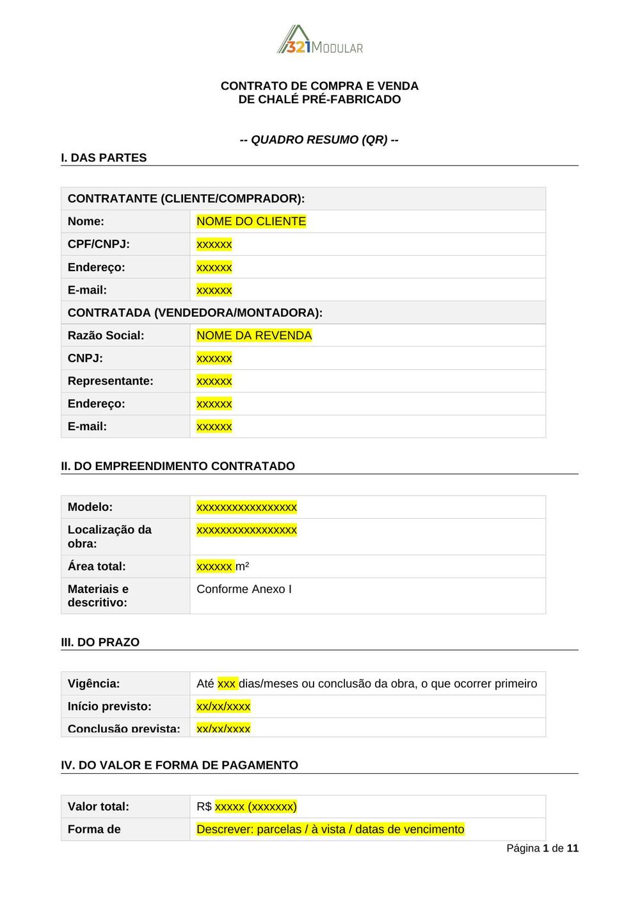
Página 2 — Serviços Adicionais
| Serviços adicionais (valor) | Informar separadamente o valor, se houver serviço adicional contratado |
| Item VI — Descrição detalhada | Descrever o que foi contratado (pintura, elétrica, hidráulica, fundação) ou "N/A" |
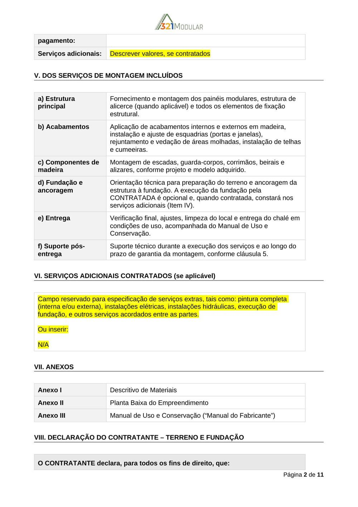
Página 3 — Declaração sobre Terreno e Fundação
| Condições especiais do solo | "Sem características especiais" ou descrever (ex: afloramento de rocha) — custos de equipamento extra não inclusos |
| Fundação executada por | Marcar CONTRATANTE (ou terceiro) ou CONTRATADA |
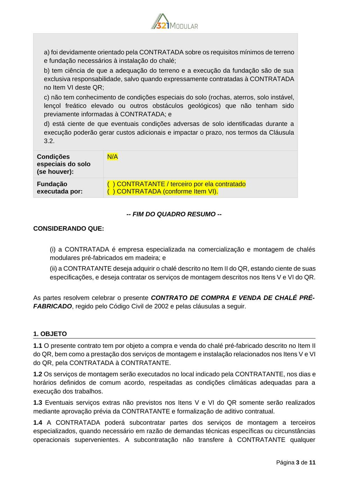
Página 8 — Local, Data e Assinaturas
Preencher com cuidado a cidade/UF, dia, mês e ano da assinatura. Conferir os dados do Contratante e da Contratada antes de assinar.
Assinatura eletrônica dispensa testemunhas (cláusula 9.6), mas local e data continuam obrigatórios.
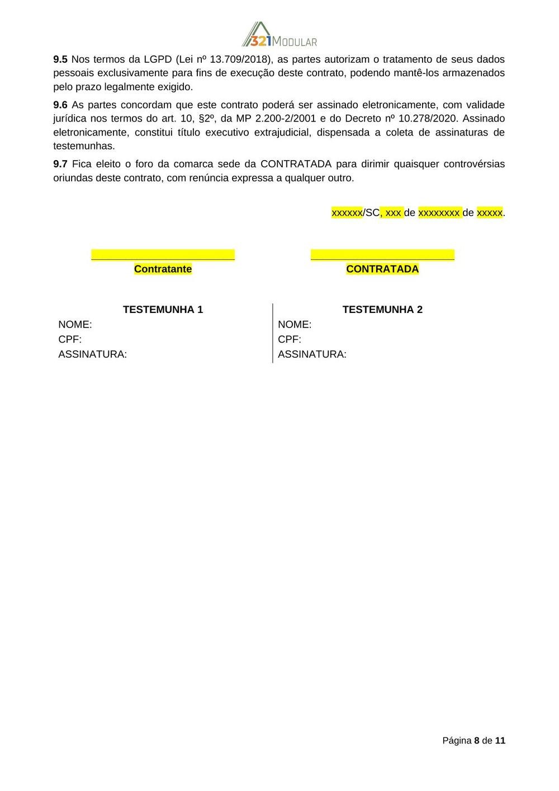
Página 9 — Anexo I: Descritivo de Materiais
Este é um ponto crucial do contrato. Todo o conteúdo desta página precisa estar rigorosamente de acordo com o que foi efetivamente combinado com o cliente no momento da venda — o texto-modelo serve apenas de referência de formato, não pode ser copiado sem conferência.
| Seção | O que revisar |
|---|---|
| Nome do modelo | Nome vendido, ou "Modelo Personalizado" + metragem |
| 1. Fundação e Apoio Estrutural | Blocos ou outro método de fundação, conforme contratado |
| 2. Estrutura e Assoalho | Revisar conforme acordado |
| 3. Paredes | Revisar conforme acordado |
| 4. Cobertura e Telhado | Revisar conforme acordado |
| 5. Esquadrias | Revisar conforme acordado |
| 6. Instalações Elétricas e Hidráulicas | Revisar conforme acordado |
| 7. Acabamentos | Revisar conforme acordado |
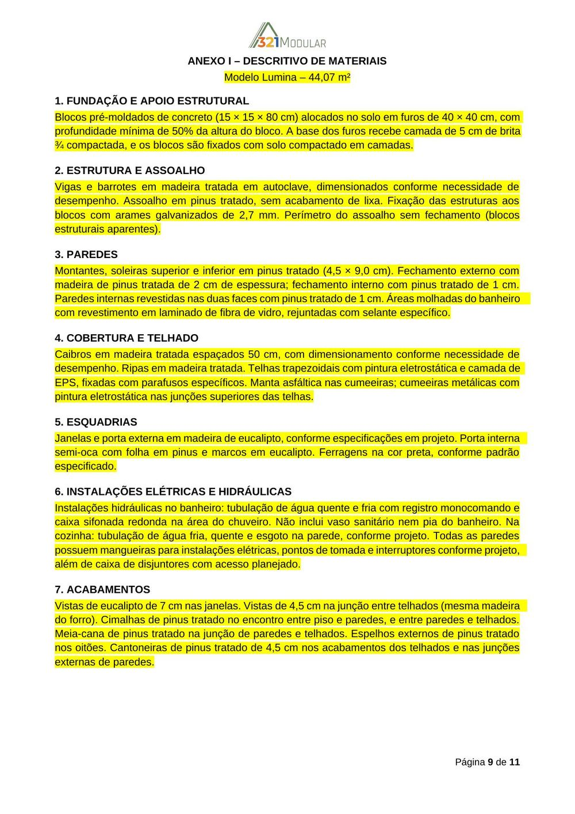
Páginas 4-7, 10 e 11 não têm campos destacados — são cláusulas fixas e os Anexos II/III (Planta Baixa e Manual do Fabricante).
Suprimentos da Obra
O Gestor de Obras transforma o contrato assinado em uma obra viabilizada — da avaliação do projeto à organização do que será necessário para a montagem.
- Avaliação do ProjetoPrimeira ação do Gestor: avaliar o projeto vendido.
- Visita Técnica ao TerrenoNormalmente realizada após o contrato assinado (padrão), podendo ser acompanhada pelo vendedor. Exceção: o vendedor pode acionar o Gestor ainda na negociação, antes do contrato assinado, se necessário.
- Pedido dos MateriaisPedido dos painéis modulares junto à 321 Modular (fábrica) e de todos os demais insumos necessários à montagem.
- Orçamentos de InfraestruturaTelhas, blocos e demais itens complementares.
- Avaliação de Acesso e LogísticaCondições de acesso ao terreno e questões logísticas da obra.
- Comunicação com o Administrativo/FinanceiroAtualizar andamento e programação de início da obra.Por que é crítico
O Administrativo/Financeiro depende dessas atualizações para iniciar as cobranças ao cliente, conforme as etapas de evolução da obra e o planejamento definido.
- Informação de Custos PrevistosInformar ao Administrativo/Financeiro todos os valores previstos dos gastos (materiais, insumos, mão de obra). Com base nisso, o Financeiro lança os custos com datas de pagamento, planeja o fluxo de caixa e, posteriormente, usa esses dados para a Demonstração do Resultado (DRE).
- Registro no TrelloLocalizar o card na coluna "+1 chalé no mapa" e preencher o checklist correspondente (terreno liberado, agendamento de entrega com a fábrica, avaliação de mão de obra). 📋 Ver Manual de Uso do Trello
- Criação do Grupo da Obra (WhatsApp)Grupo nomeado com o nome do cliente, com planta baixa, localização do terreno e demais informações anexadas.
- Composição: Gestor Operacional das Obras + Administrativo/Financeiro (fixos) + equipe de montagem (apenas durante a execução, saindo ao concluir)
- Após a conclusão, o grupo permanece ativo como histórico da obra
Planejamento da Obra
Etapa de programação: o Gestor de Obras organiza e sincroniza tudo que precisa acontecer para a montagem ocorrer no prazo previsto.
Frentes de Atenção do Gestor de Obras
- Datas ContratuaisFicar atento às datas e limites de entrega firmados no contrato.
- Acesso e Preparo do TerrenoEm algumas situações, o terreno ainda está sujeito a liberação de acesso ou preparo da área. O Gestor gerencia isso em contato direto com o cliente.
- Condições ClimáticasFicar atento às previsões de tempo, que impactam diretamente o agendamento da montagem.
- Agendamento de Frete e MunckOrganizar as equipes de frete e serviços de munck para que a montagem aconteça no prazo previsto.
- Contato com a FábricaAgendamento da data de carregamento — respeitando sempre os limites para solicitar alterações de chalés ou pedidos.
- Compra e Instalação dos BlocosAjustar a compra dos blocos (base do chalé) e providenciar a instalação prévia no terreno.
- Compra e Entrega de MateriaisOrganizar compra e logística de entrega dos materiais na obra.
- Organização das Equipes de Mão de ObraOrganizar as equipes responsáveis pela execução da montagem.
- ComunicaçãoFrente fundamental, com três públicos:
- Equipes de mão de obra: orientações das características específicas de cada montagem
- Cliente: comunicação constante sobre o andamento — etapa fundamental do processo
- Financeiro: a data de planejamento/início impacta recebimentos e pagamentos (inclusive mão de obra)
- Ferramenta de ProgramaçãoO Trello é a ferramenta de gestão nesta etapa. O card evolui pelas colunas: +1 chalé no mapa → Pedido realizado na fábrica → Carregamento agendado. 📋 Ver Manual de Uso do Trello
Ferramenta futura
Está em desenvolvimento uma ferramenta de calendário dedicada à programação das obras, para o franqueado visualizar melhor o andamento. Ainda não existe — por ora, o Trello segue sendo a ferramenta oficial.
Montagem
A etapa que mais exige cuidado de toda a cadeia de valor.
Qualquer retrabalho na Montagem é muito mais custoso do que em etapas anteriores. Falhas de organização geram prejuízo direto — tanto financeiro quanto de prazo.
Cuidados Fundamentais
- Certificação das Datas de RecebimentoConfirmar previamente as datas de recebimento dos materiais, evitando perda de tempo e equipes paradas. Tudo precisa estar preparado e comunicado entre todas as partes antes do início.
- Projeto em Mãos da EquipeA equipe precisa ter, antes do início, o projeto completo e a planta baixa com todo o detalhamento necessário.
- Conferência no Recebimento dos MateriaisNa chegada dos materiais, realizar conferência no momento da descarga, verificando se tudo que consta no pedido efetivamente chegou.
- Cumprimento dos Manuais TécnicosSeguir criteriosamente as recomendações de montagem, respeitando integralmente os manuais técnicos da empresa.
- Acompanhamento do Gestor de ObrasComunicação constante com as equipes, visitas às obras, verificação da qualidade geral. Ao identificar falhas, solicitar correção antes de prosseguir.
Checklist de Entrega Final (acompanhado durante toda a Montagem)
Este checklist tem itens que representam os pontos críticos da montagem — por isso é acompanhado durante todo o processo, não só ao final.
- O carpinteiro/equipe de montagem preenche o checklist através de ferramenta própria, anexando fotos e justificativa por item.
- O Gestor de Obras acompanha os mesmos itens ao longo do processo, já que são pontos críticos observados enquanto a obra avança.
- Ao final, gera um Relatório de Qualidade, com dados da obra, observação geral obrigatória e assinatura do responsável.
| # | Item de verificação |
|---|---|
| 1 | Estrutura aprumada — todos os apoios conferidos |
| 2 | Esquadro conferido e de acordo com as medidas de projeto |
| 3 | Estrutura nivelada |
| 4 | Alinhamento entre as estruturas sem desvios |
| 5 | Profundidade de fixação conforme orientação (40/60cm) — blocos firmes e sem movimento |
| 6 | Concretagem executada nos blocos que exigiram |
| # | Item de verificação |
|---|---|
| 1 | Junção entre módulos de piso — sem frestas, alinhada e fixada |
| 2 | Junção entre painéis de parede — sem folgas ou desvios visíveis |
| 3 | Encontros de lâminas do banheiro executados corretamente |
| 4 | Estrutura sem empenamentos, torções ou deformações visíveis |
| # | Item de verificação |
|---|---|
| 1 | Todas as portas abrem, fecham e trancam sem esforço ou folga |
| 2 | Todas as janelas deslizam e abrem corretamente e vedadas |
| 3 | Esquadrias niveladas e prumo conferido |
| 4 | Acabamentos das esquadrias sem lascas, amassados ou folgas |
| 5 | Silicone aplicado em todas as vistas externas — contínuo e sem falhas |
| # | Item de verificação |
|---|---|
| 1 | Vistas instaladas — recortes em 45º, sem folgas nos encontros |
| 2 | Meia cana instalada — recortes em 45º e Titebond nas externas |
| 3 | Cimalhas instaladas e alinhadas — recortes e encontros conferidos |
| 4 | Rodapés instalados — sem folgas no piso ou nas quinas |
| 5 | Cola Titebond aplicada nas vistas e meia cana externas |
| 6 | Todos os acabamentos sem manchas, lascas ou marcas de ferramenta |
| 7 | Rejunte do banheiro aplicado — limpo e sem falhas |
| 8 | Escada instalada e fixada corretamente |
| # | Item de verificação |
|---|---|
| 1 | Telhas verificadas — sem arranhados, amassados ou quebras |
| 2 | Parafuso em todas as telhas — sem telha sem fixação |
| 3 | Todos os parafusos firmes — sem parafusos soltos |
| 4 | Galvanizador líquido aplicado em todos os recortes das telhas |
| 5 | Alinhamento das telhas conferido — sem sobreposição incorreta |
| 6 | Cumeeira e rufos instalados e vedados |
| # | Item de verificação |
|---|---|
| 1 | Pisos fixados aos blocos de concreto em todos os pontos de apoio |
| 2 | Fixadores conferidos e sem folgas — nenhum ausente |
Total: 31 itens de verificação. Cada item exige justificativa preenchida, e cada frente tem campo de observações. Ao final, uma observação geral é obrigatória, seguida da assinatura do responsável.
Entrega Técnica
Sempre mediada por dois documentos: o Checklist de Entrega do Chalé e o Manual de Uso, Operação e Manutenção.
Procedimento da Entrega Técnica
- Dados da obraPreencher no Checklist: Cliente, Modelo, Endereço, Data da entrega, Equipe responsável.
- Percorrer o Checklist com o cliente presenteOs 7 blocos de verificação, item a item, marcando "Conforme"/"Não conforme" e observações.
- Registrar observações e pendênciasCampo próprio do Checklist.
- Assinaturas do ChecklistResponsável 321 Modular + Cliente.
- Entregar o Manual de Uso, Operação e ManutençãoPreenchendo dados do proprietário e da edificação.
- Termo de ResponsabilidadeAssinatura do cliente (Anexo 7.1 do Manual).
- Termo de Recebimento do ImóvelAssinatura do cliente (Anexo 7.2 do Manual).
O Termo de Recebimento declara que o cliente participou do checklist final e não há pendências. Após a assinatura, presume-se que o imóvel foi entregue sem pendências aparentes. Qualquer falha visualmente perceptível precisa ser apontada no Checklist antes de qualquer assinatura.
Explicações Obrigatórias ao Cliente
Durante a entrega técnica, explicar verbalmente e com clareza:
- Pintura e manutenção periódica: repintura da madeira nos períodos definidos pela garantia — manutenção obrigatória, não opcional.
- Galvanização líquida das telhas: aplicação nos recortes das telhas, cuidado que impacta a garantia da cobertura.
- Comportamento natural da madeira: material orgânico, sofre pequenas variações de medida — mas isso não significa que vão se abrir frestas. A construção é projetada para que a madeira se comporte naturalmente sem transtornos.
Conteúdo do Checklist de Entrega
Dados da obra: Cliente · Modelo do Chalé · Endereço da instalação · Data da entrega · Equipe responsável
| 1 | Base nivelada e ancorada corretamente |
| 2 | Painéis de piso fixados e sem folgas |
| 3 | Estrutura das paredes montada conforme projeto |
| 4 | Esquadros e prumos conferidos |
| 5 | Estrutura do telhado alinhada e fixada |
| 1 | Portas internas e externas instaladas e funcionais |
| 2 | Janelas instaladas e abrindo normalmente |
| 3 | Fechaduras, trincos e dobradiças ajustados |
| 4 | Vedação ao redor das esquadrias concluída |
| 1 | Vistas instaladas em todas as aberturas e sem detalhes |
| 2 | Junções entre telhados instalados e sem falhas |
| 3 | Rodapés e acabamentos de canto instalados |
| 4 | Meia cana no encontro entre paredes/telhados sem falhas |
| 5 | Revestimentos do banheiro limpos, íntegros, rejunte bem executado |
| 6 | Escada instalada conforme projeto, funcional |
| 1 | Revestimento externo em madeira sem avarias |
| 2 | Espelhos instalados corretamente |
| 3 | Vistas de acabamento do beiral bem executados |
| 4 | Varanda nivelada e sem folgas nas fixações |
| 1 | Telhas bem fixadas, alinhadas e íntegras |
| 2 | Arremates de cumeeira completos |
| 3 | Ausência de infiltrações aparentes |
| 1 | Caixas elétricas fixadas e Caixa de Disjuntores sem avarias |
| 2 | Passagem de tubulações elétricas conforme projeto |
| 3 | Pré-instalação de ar-condicionado (se contratado) |
| 4 | Tubulações e conexões hidro sanitárias preservadas |
| 1 | Resíduos e embalagens removidos do local |
| 2 | Superfícies limpas e sem resíduos de obra |
| 3 | Manual de manutenção entregue ao cliente |
8. Observações Gerais / Pendências — campo de texto livre. Assinaturas: Responsável 321 Modular e Cliente.
Sobre o Manual de Uso, Operação e Manutenção
Documento técnico completo entregue ao cliente junto com a chave do imóvel. Pontos operacionais mais relevantes:
- Dados a preencher: dados do proprietário e da edificação.
- Garantias por componente (estrutura, cobertura, esquadrias, forros), condicionadas ao cumprimento das manutenções preventivas.
- Defeito de fabricação (vício nos componentes/materiais) → responsabilidade da 321 Modular Ltda.
Falha de montagem (execução dos serviços) → responsabilidade do franqueado.
Em ambos os casos, o primeiro contato do cliente é sempre com o franqueado.
Referência Cruzada — Contrato
Esta etapa se conecta a informações já definidas no contrato (ver Formalização da Venda): III. Do Prazo (Vigência, Início e Conclusão previstos) e Item V.e) Entrega, que já prevê "verificação final, ajustes, limpeza do local e entrega acompanhada do Manual".
Registro no Trello
Ao concluir a entrega, o card é movido para a coluna "Finalizado". 📋 Ver Manual de Uso do Trello
Manual de Uso do Trello
Quadro "Jornada do Cliente" — acompanha cada venda desde o fechamento até a entrega e eventual manutenção. Usado principalmente pela equipe de gestão de obra.
Cada etapa da cadeia de valor menciona apenas uma linha curta apontando para cá — o detalhamento completo de cada checklist vive neste Anexo.
Nome do Quadro
Cada unidade franqueada tem seu próprio quadro, numerado e identificado pela cidade — padrão: "0X. JORNADA DO CLIENTE (Cidade)". Exemplo real: "03. JORNADA DO CLIENTE (Palhoça)".
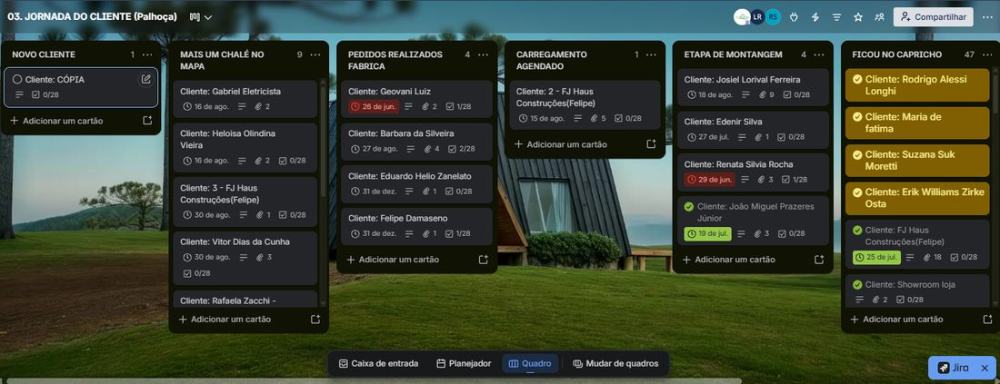
Colunas do Quadro
O card se move fisicamente pelas colunas — por clique e arraste (drag and drop) — conforme o cliente avança dentro da empresa:
- Novo Cliente
- Mais um Chalé no Mapa
- Pedidos Realizados Fábrica
- Carregamento Agendado
- Etapa de Montagem
- Ficou no Capricho (coluna de conclusão/finalização)
Basta clicar e arrastar o card entre as colunas para administrar visualmente a evolução da obra ou do cliente até a conclusão e entrega do chalé. O Trello é a ferramenta central de gestão de toda essa operação.
Template do Cartão
Na coluna "Novo Cliente" existe um card fixo chamado "Cliente: CÓPIA" — este é o template oficial e nunca deve ser editado ou movido diretamente.
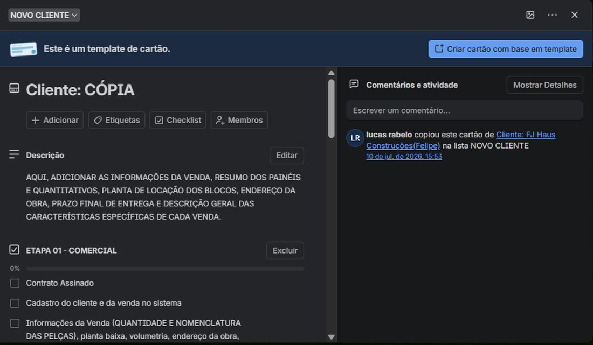
- Abrir o templateClicar no card "Cliente: CÓPIA" na coluna Novo Cliente.
- Criar cópiaClicar no botão "Criar cartão com base em template". O sistema gera automaticamente uma cópia completa do card — checklists, descrição-guia e tudo mais.
- Editar a cópiaToda a edição (nome, descrição, preenchimento dos checklists) acontece a partir do card recém-criado. O template original permanece intacto, pronto para o próximo cliente.
Título do Cartão
Padrão: "Cliente: [Nome]" — mantendo sempre a palavra "Cliente:" seguida do nome. Incluir também a cidade da obra no título, o que facilita identificar visualmente cada card dentro das colunas do Kanban.
Descrição do Cartão
Breve descrição da obra. Pode-se colar ou anexar ali informações do contrato que sejam relevantes para quem for consultar o Trello posteriormente (a equipe de gestão de obra, principalmente).
Checklists do Cartão — As 5 Etapas
As 5 etapas abaixo já existem todas dentro do mesmo card, desde a criação a partir do template — não são criadas uma a uma. A equipe vai marcando os itens de cada etapa conforme a obra evolui, e o card é movimentado entre as colunas do quadro à medida que essas etapas avançam.
Etapa 01 — Comercial
- Contrato Assinado
- Cadastro do cliente e da venda no sistema
- Informações da Venda — quantidade e nomenclatura das peças, planta baixa, volumetria, endereço da obra, data desejável da entrega da obra
- Informações do Terreno — condições das vias de acesso, abastecimento de água e energia elétrica, características do relevo do terreno (fotos), altura dos blocos necessários para infraestrutura, altura das redes de energia elétrica e localização da obra
Etapa 02 — Programação de Montagem
- Terreno Liberado — terreno livre e sem restrições para o início das atividades de montagem da obra (instalações de blocos e da construção)
- Agendamento da entrega com a Fábrica
- Agendamento com equipe de mão de obra
- Agendamento com serviços de munck
- Pedido das telhas e acessórios
- Pedidos adicionais para serviços complementares
Etapa 03 — Montagem
- Conferência e Revisão do Manual de Montagem — receber o manual de montagem da obra, revisá-lo, sanando toda e qualquer dúvida relacionada ao processo de montagem da obra
- Instalação Alicerce — blocos instalados e finalizados para receber as estruturas em madeira
- Instalação Estrutura — paredes, coberturas e telhas instalados
- Instalação Acabamento — vistas, meia cana, rodapés, rejuntes de banheiros
- Aberturas — regulagem de todas as portas e janelas da construção
- Checklist Interno — revisar criteriosamente: 01. Junção de pisos; 02. Acabamentos de meia cana, rodapés e vistas; 03. Perfeito funcionamento das portas e janelas; 04. Revisar o rejunte dos laminados de fibra de vidro; 05. Revisar desnível do assoalho no piso do box do banheiro; 06. Revisar instalações das telhas e cumeeiras — parafusos e amassados; 07. Limpeza da obra e do entorno
- Destinação correta dos resíduos de obra — descartar corretamente os resíduos gerados na obra, separando as madeiras que poderão ser reaproveitadas, das que devem ser descartadas, e também os plásticos e outras sobras que não podem ter o mesmo destino das madeiras
- Checklist Externo — realizar juntamente com o cliente, revisando todos os itens do checklist interno, porém junto com o cliente. Esclarecer possíveis dúvidas e orientar quanto aos cuidados de manutenção da obra
- Álbum de fotos — registrar fotos da obra finalizada, com destaque aos itens relacionados ao checklist interno
Etapa 04 — Finalizado
- Checklist e entrega realizados
- Recebimento (R$) finalizados
- Álbum de fotos
- Revisão da obra com time envolvido
- Apresentação dos resultados
Etapa 05 — Manutenção
- Agendar visita
- Agendar manutenção
- Registrar manutenções realizadas
As manutenções devem ser sempre registradas por escrito junto ao cliente, de preferência com a assinatura dele.
Pós-venda
O trabalho não acaba na entrega das chaves. Os primeiros 30 dias são o período de maior risco de insatisfação e o maior potencial de encantamento.
Régua de Pós-venda — 30 Dias
| Momento | Ação | Canal |
|---|---|---|
| Dia da entrega | Mensagem comemorativa 🏡 | |
| D+3 | Check-in de experiência — "Como está sendo a primeira semana?" | |
| D+7 | Enviar link da pesquisa NPS | |
| D+15 | Dica de uso, manutenção ou decoração | |
| D+30 | "Um mês de chalé! Como está tudo?" + ativar programa de indicação | WhatsApp ou Ligação |
NPS — Pesquisa de Satisfação
Agradecer + ativar programa de indicação imediatamente.
Agradecer + entender o que faltou para chegar ao 10.
Gerente liga em até 24h para entender e resolver. Nunca delegar para o vendedor resolver sozinho.
Nota 6 ou abaixo nunca fica sem resposta do Gerente. Nunca delegar para o vendedor resolver sozinho — o Gerente precisa estar presente nessa conversa.
Referência Cruzada — Trello e Entrega Técnica
O ciclo de Pós-venda começa no momento em que o card do cliente chega à coluna "Finalizado" no Trello (ver Manual de Uso do Trello), logo após a conclusão da Entrega Técnica.
Financeiro e Administrativo
Sistema web de Gestão Financeira 321 Modular — cada obra é tratada como um negócio individual, com receita, custos e resultado apurados separadamente.
Ao abrir o app, é solicitado um usuário e um token de acesso. Esse login conecta a um banco de dados na nuvem (Supabase), mantendo os dados de cada loja separados e seguros. Se o navegador estiver configurado para manter a sessão, o acesso seguinte é automático, sem necessidade de novo login.
2. Painel (Dashboard)
Visão consolidada do negócio, atualizada automaticamente — tela inicial do sistema. Reúne indicadores principais do período selecionado, gráficos de faturamento e resultado, margem por obra, composição de custos, pipeline de obras por status, e a lista das obras mais recentes.
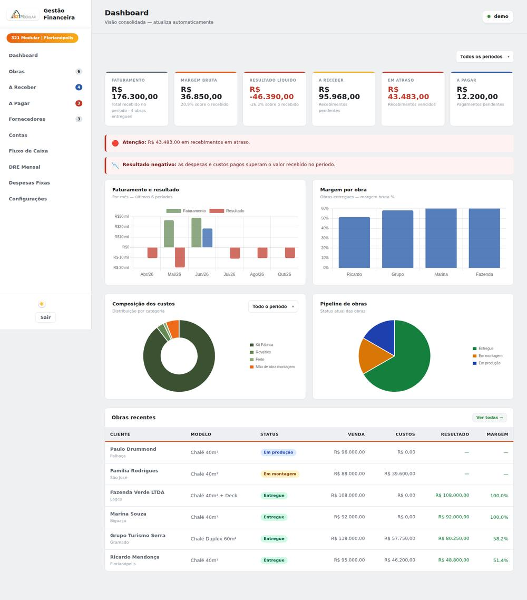
O seletor no canto superior direito filtra os indicadores por período. O botão "Ver todas →", no card de obras recentes, leva direto ao módulo Obras.
3. Obras
Módulo central do sistema — cada obra é um centro de custo próprio. Cada obra cadastrada tem receita, custos e resultado apurados individualmente.
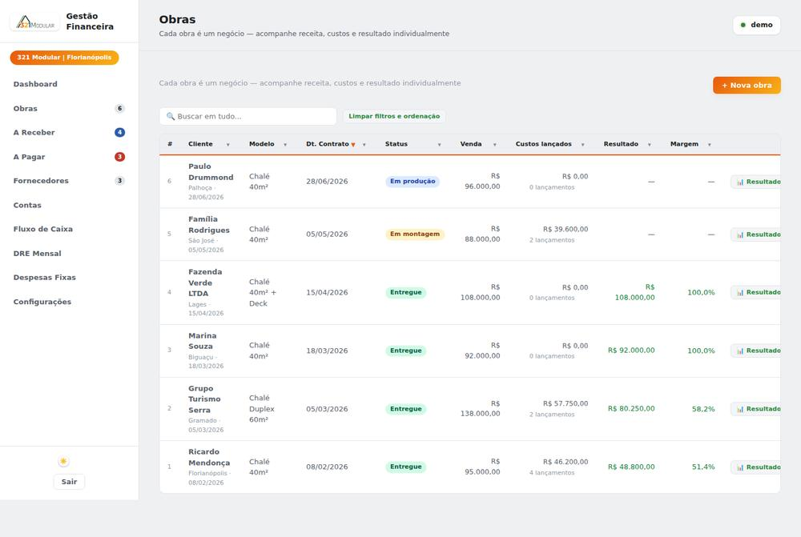
Ao clicar em "+ Nova obra", abre-se o formulário de cadastro:
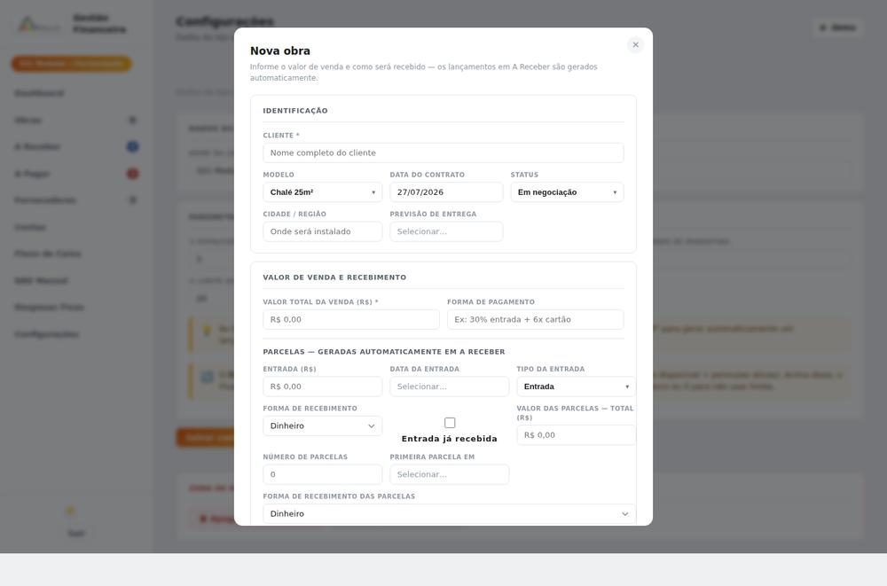
- IdentificaçãoCliente, modelo, cidade, status (Em negociação → Contrato assinado → Em produção → Em montagem → Entregue) e valor de venda.
- Composição do pagamentoEntrada, parcelas, permuta (pagamento com bem, não em dinheiro) e/ou saldo na entrega.
- SalvarO sistema gera automaticamente todos os lançamentos correspondentes no módulo A Receber — não é necessário lançá-los manualmente.
A comissão de venda também é lançada automaticamente em A Pagar, vinculada à obra, com base no percentual configurado em Configurações.
Importante: se o valor de venda for alterado posteriormente, a comissão é recalculada. Caso já tenha havido pagamento parcial da comissão, esse valor pago é preservado — apenas o status volta para "Pendente", para facilitar a conferência da diferença.
Forma de pagamento, prazos e valores registrados aqui já devem estar previamente aprovados pela Gerência — o cadastro no sistema formaliza o que já foi definido, não é o momento de decidir esses pontos.
4. A Receber
Valores a receber dos clientes. Lista todos os valores a receber, gerados automaticamente pelo cadastro de obras (também é possível incluir lançamentos avulsos pelo botão "+ Lançamento avulso").
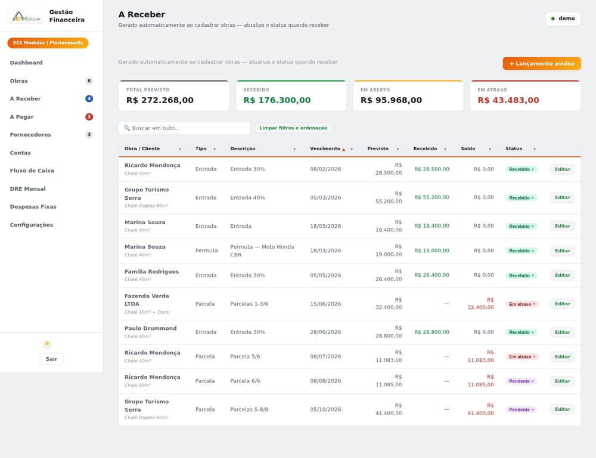
Para confirmar um recebimento:
- Abrir o lançamentoAlterar o status para Recebido.
- Forma de recebimentoSelecionar (Dinheiro/PIX, Cheque, Permuta) e a conta de destino.
- Forma Cheque: o sistema cria automaticamente um registro em Fluxo de Caixa → Cheques.
- Forma Permuta: o sistema cria o registro em Fluxo de Caixa → Permutas, alertando (sem bloquear) se o volume de permutas ultrapassar o limite configurado.
Lançamentos com vencimento ultrapassado e ainda não recebidos são marcados automaticamente como "Em atraso".
5. A Pagar
Pagamentos da loja: fornecedores, mão de obra, comissões, royalties e despesas operacionais. Organizado em abas: Todos, Custos de obras, Operacional e Vencidos.
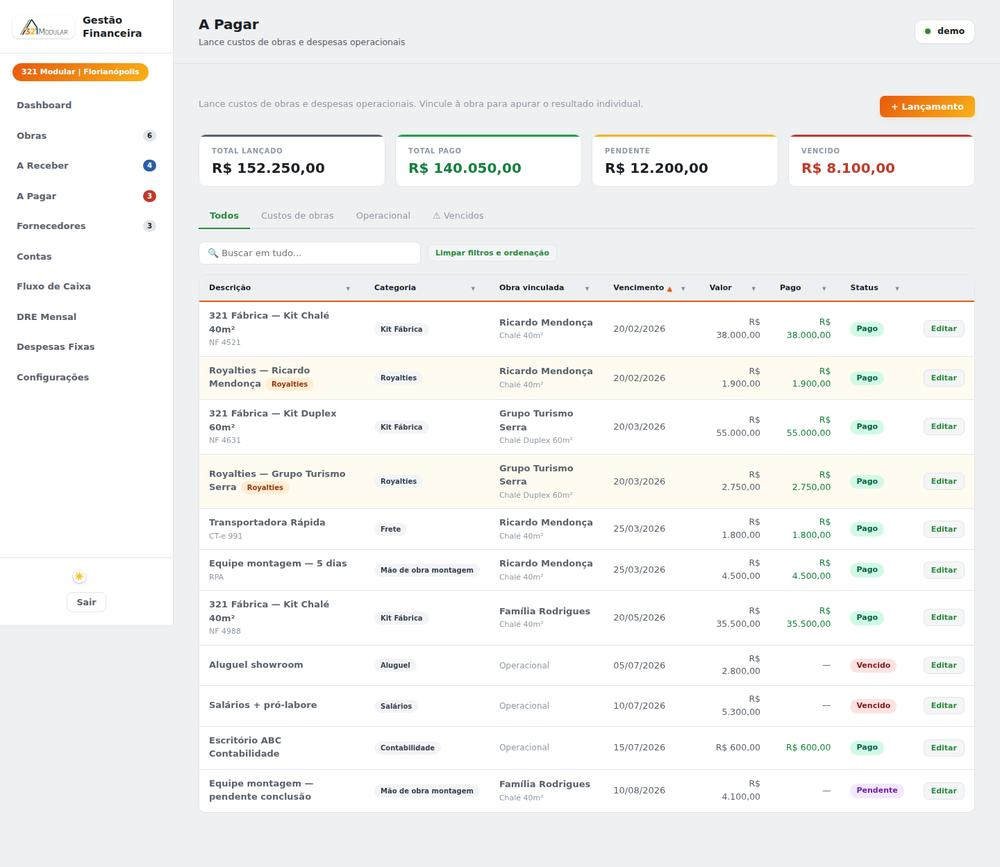
Ao clicar em "+ Lançamento", o formulário se adapta conforme a categoria e a forma de pagamento escolhidas:
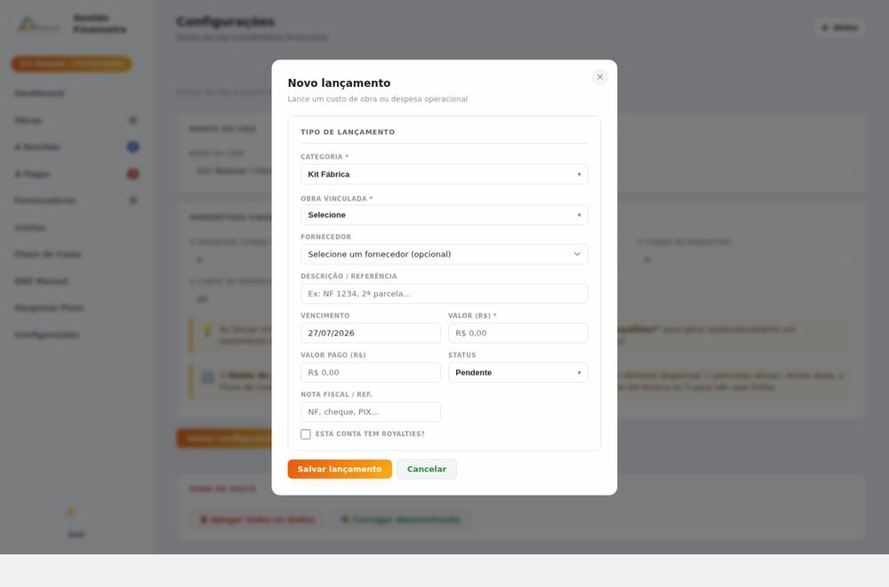
Ao marcar um lançamento como Pago:
- Cheque: selecione um cheque disponível em carteira para repassar.
- Permuta: selecione uma permuta ativa para utilizar.
- Dinheiro/PIX: selecione a conta de origem do valor.
Ao marcar a opção "Esta conta tem Royalties?", o sistema calcula e lança automaticamente o valor de royalties com base no percentual configurado em Configurações.
6. Fornecedores
Cadastro de fornecedores (nome, telefone, categoria, CNPJ/CPF), usado para preencher automaticamente os lançamentos em A Pagar.
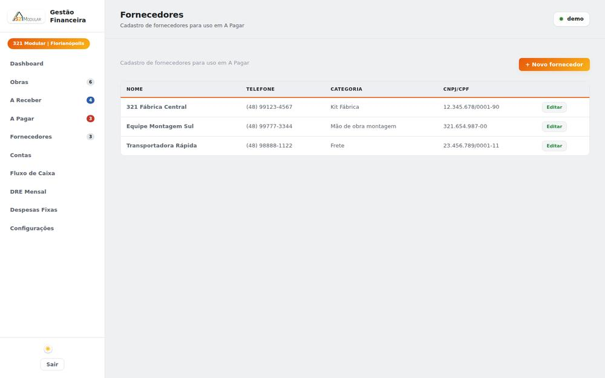
7. Contas
Cadastro das contas onde o dinheiro da loja fica (caixa físico, contas bancárias, poupança).
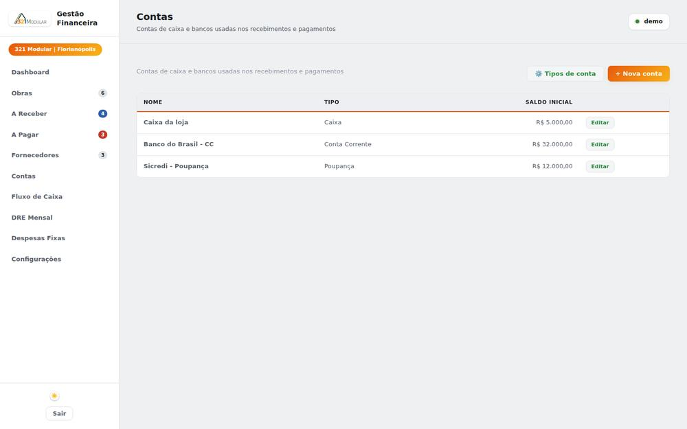
Saldo = saldo inicial
+ recebimentos lançados nessa conta
+ cheques depositados nessa conta
− pagamentos saídos dessa conta
Os tipos de conta (Caixa, Conta Corrente, Poupança etc.) podem ser personalizados pelo botão "Tipos de conta".
8. Fluxo de Caixa
Consolida a movimentação financeira em três abas: Visão geral, Cheques e Permutas.
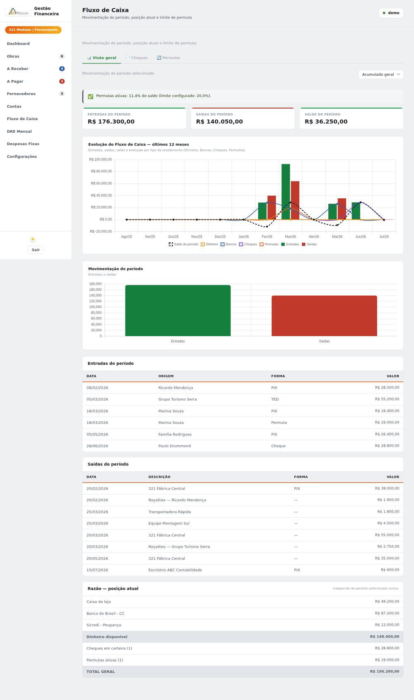
| Aba | Função |
|---|---|
| Visão geral | Entradas, saídas e saldo por mês, além da posição atual consolidada de contas, cheques e permutas |
| Cheques | Fila de cheques recebidos — cada um pode ser marcado como Depositado (soma o valor na conta escolhida) ou Devolvido (sai da fila sem gerar entrada financeira) |
| Permutas | Bens recebidos como forma de pagamento, com status Ativa, Usada (aplicada em um pagamento) ou Baixada (encerrada manualmente) |
9. DRE Mensal
Demonstrativo de resultado da loja, consolidado ou por obra individual.
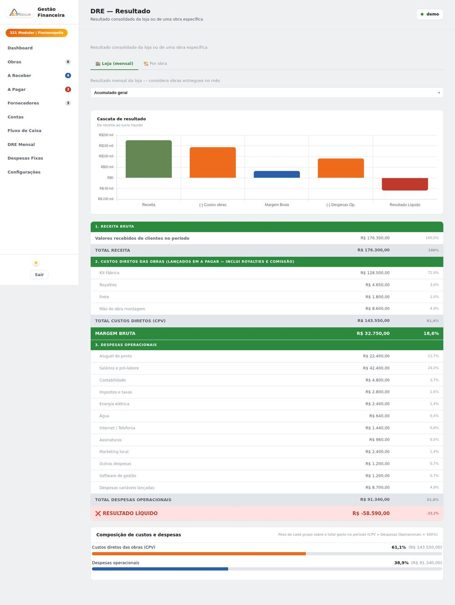
Ao selecionar um mês específico, os custos de uma obra só entram no cálculo se essa obra já estiver marcada como "Entregue" com data de entrega naquele mês. Na opção "Acumulado geral", os custos de todas as obras são somados independentemente do status — é um comportamento esperado do sistema, não um erro.
10. Despesas Fixas
Espaço para lançar despesas recorrentes da loja, não vinculadas a obras específicas (aluguel, salários, contabilidade, internet, etc.), incluindo despesas extras cadastradas livremente. Esses valores alimentam automaticamente o DRE.
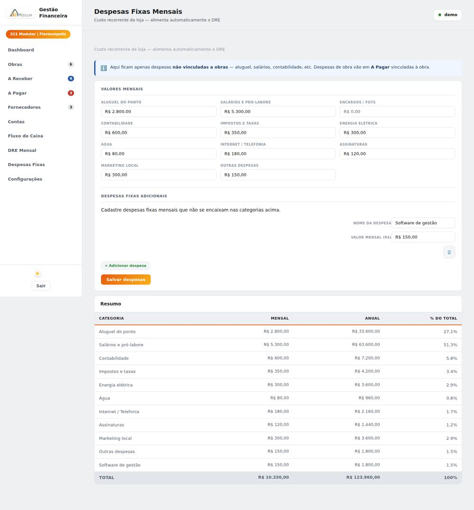
11. Configurações
Parâmetros gerais da loja: nome da loja e responsável, percentual de royalties, percentual de comissão de vendas, percentual de marketing e limite de permuta (percentual a partir do qual o sistema emite alerta).
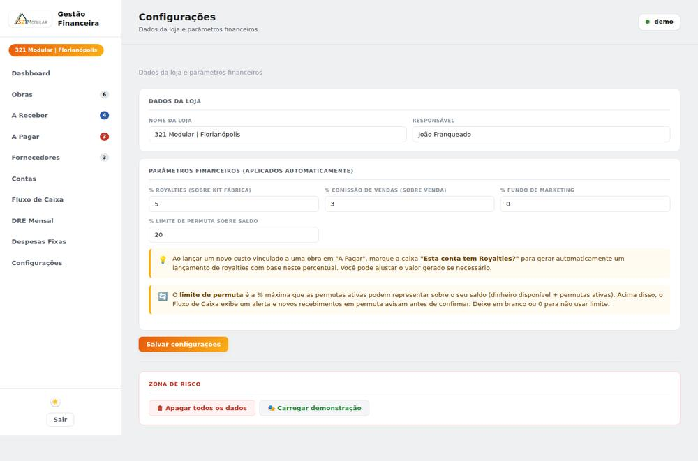
Sequência Recomendada de Uso
- ConfiguraçõesPreencha nome da loja, percentual de comissão e de royalties.
- ContasCadastre o caixa da loja e as contas bancárias.
- FornecedoresCadastre os principais fornecedores.
- Despesas FixasInforme aluguel, salários e demais despesas recorrentes.
- ObrasInicie o cadastro das obras — é a partir daqui que os demais módulos se alimentam automaticamente.
- RotinaMantenha A Receber e A Pagar atualizados conforme os recebimentos e pagamentos ocorrem.
- AcompanhamentoUse o Painel, o Fluxo de Caixa e o DRE para monitorar o desempenho da loja periodicamente.
O que o Sistema Automatiza
| Ação do usuário | O que o sistema faz automaticamente |
|---|---|
| Cadastra uma obra com entrada/parcelas/saldo | Gera os lançamentos correspondentes em A Receber |
| Cadastra uma obra | Calcula e lança a comissão em A Pagar |
| Marca um recebimento como "Cheque" | Cria o registro na fila de cheques |
| Marca um recebimento como "Permuta" | Cria o registro de permuta e alerta sobre o limite |
| Marca um pagamento com Royalties | Calcula e lança o valor de royalties |
| Uma data de vencimento é ultrapassada | Atualiza o status para "Em atraso"/"Vencido" |
| Deposita um cheque | Soma o valor na conta de destino escolhida |
Referência Cruzada
- Suprimentos da Obra: o Gestor de Obras informa os valores previstos de gastos, que alimentam o cadastro em A Pagar.
- Planejamento da Obra: as datas de início/planejamento impactam diretamente o cronograma de recebimentos e pagamentos.
- Comercial (2.12): forma de pagamento, prazos e valores só chegam aqui após aprovação prévia da Gerência.
Manual de Uso do Leezi (CRM)
Plataforma oficial de gestão comercial — funil de vendas, comunicação com o cliente e organização da rotina do vendedor.
Cada etapa da cadeia de valor menciona apenas uma linha curta apontando para cá — o detalhamento completo do funil, das regras de transição e da operação do CRM vive neste Anexo.
Visão Geral da Interface
As áreas principais de trabalho do vendedor, no topo do menu lateral:
| Área | Função |
|---|---|
| Dashboard | Números gerais do resultado do vendedor no mês — número de vendas, negócios ativos, taxa de conversão |
| CRM | O funil de vendas, com todas as etapas do pipeline |
| Tarefas | Rotinas e ações agendadas — o vendedor deve acessá-las primeiro a cada dia |
| Agenda | Compromissos e reuniões agendadas |
| Metas | Acompanhamento de desempenho frente às metas definidas |
Comunicação: Conversas, Chatbot, Mensagens, Contatos, Reuniões. | Sistema: Configurações, Administração.
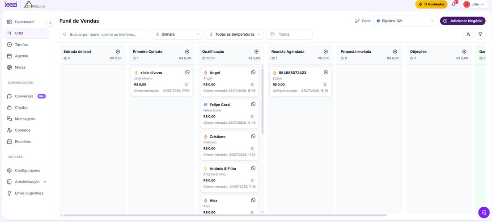
As 9 Etapas do Funil — Regras de Transição
Cada etapa define o que precisa ser feito e identificado antes de o lead avançar para a próxima fase do funil comercial.
01 · Entrada do Lead
Origem & primeiro registro
Origem a identificar: Tráfego pago (Instagram Ads, Facebook Ads, Google Ads) · Indicação · Visita ao site (orgânico) · Evento
Até 24 horas após a entrada do lead — quanto antes, melhor.
02 · Primeiro Contato
Consultivo · sempre por ligação
O primeiro contato é sempre feito através de ligação.
Informações a levantar
- Finalidade do imóvel: investidor, moradia, lazer ou locação
- Região onde pretende construir
- Se possui terreno ou não
Ação nesta etapa
- Apresentação institucional breve da 321 Modular
- Vídeo estratégico com o diferencial da empresa
- Menção aos 40 anos de história no segmento de contenção em madeira
03 · Qualificação
Material de apoio · decisores · diagnóstico
Materiais a enviar
- Portfólio de projetos/obras alinhados ao perfil do cliente
- Vídeos de obra
- Cases relevantes
Reunião de diagnóstico
- Preferencialmente presencial, no showroom
- Alternativa: reunião virtual
- Objetivo: proximidade e contato próximo
Mapear todos os decisores envolvidos na compra. O agendamento da próxima etapa só deve ocorrer com os decisores confirmados na reunião.
04 · Visita Agendada
Definição do produto · terreno · orçamento
Definição do chalé
- Modelo desejado
- Metragem
- Características
Levantamento do terreno
- Se está nivelado
- Se tem acesso
- Tamanho do terreno
Se investidor
- Expectativa de retorno
- Valor de diária média pretendida na região
Orçamento & pagamento
- Entrega de orçamento ao cliente
- Forma de pagamento: recurso próprio, financiamento ou misto
05 · Proposta Enviada
Rapidez de entrega · acompanhamento
A proposta é elaborada com base em todas as informações do diagnóstico levantadas nas etapas anteriores e deve ser encaminhada com rapidez.
Formato de entrega
- Presencial no showroom — cliente sai com a proposta em mãos
- Se ausente: envio + apresentação por ligação, esclarecendo dúvidas técnicas e financeiras
Acompanhamento
- Registrar o prazo combinado com o cliente para retorno da decisão de compra
06 · Objeção
Acolhimento · resposta assertiva
Toda objeção é tratada como manifestação de interesse do cliente na aquisição do chalé — sejam objeções técnicas, de investimento ou de prazo.
Processo
- Registrar as objeções nas notas do CRM
- Pesquisar informações para responder de forma técnica
Regra de qualidade
- Respostas pontuais e assertivas
- Nunca gerar mais dúvida do que a que foi trazida pelo cliente
07 · Manter Contato / Notícias
Cadência personalizada de follow-up
Reúne leads que ainda não tomaram a decisão, cujo terreno ainda não está liberado, ou que têm algum outro fator travando a decisão.
Regra de personalização
- O tipo de notícia/conteúdo enviado e o tipo de contato acompanham o histórico já levantado do lead nas etapas anteriores
Disciplina de CRM
- Manter sempre um histórico das principais observações de cada contato
- Cadência ajustada individualmente por cliente
Etapa final de fechamento — venda concluída.
É obrigatório registrar o motivo da perda ao mover o lead para esta etapa, para coletar informações que permitam revisar estratégias comerciais e de marketing.
Ficha do Cliente (Card Individual)
Ao abrir o card de um cliente dentro do funil, o vendedor acessa uma visão completa da negociação.
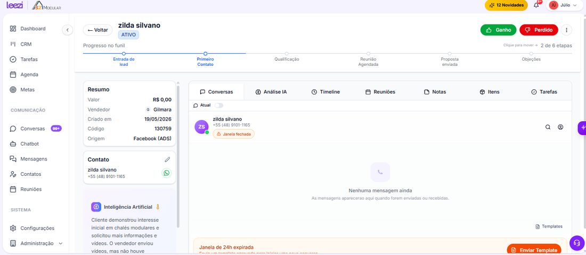
Bloco Resumo
Valor · Vendedor · Criado em · Código · Origem
Bloco Contato
Nome, telefone e acesso direto ao WhatsApp
Abas do Card
| Aba | Conteúdo |
|---|---|
| Conversas | Histórico de mensagens trocadas com o cliente |
| Análise IA | Resumo automático gerado por IA sobre o andamento da negociação |
| Timeline | Linha do tempo de toda a movimentação do lead |
| Reuniões | Reuniões agendadas com o cliente |
| Notas | Observações importantes — conversas presenciais, ligações ou qualquer informação relevante da negociação |
| Itens | Modelo e tipo de chalé de interesse do cliente |
| Tarefas | Ações agendadas para os próximos contatos com o cliente |
É crucial sempre agendar as tarefas no card do cliente. É a partir delas que o vendedor sabe, automaticamente, nos dias seguintes, o que fazer em cada negociação em andamento. Sem tarefas agendadas, o acompanhamento fica dependente da memória do vendedor.
Suporte e Assistência com IA
Dois botões roxos ficam sempre disponíveis no canto inferior direito da tela:
🎧 Suporte Virtual
Botão com ícone de fone de ouvido. Um suporte virtual com IA integrada — qualquer dúvida sobre o uso e a operação do Leezi (o CRM em si) pode ser esclarecida por ali.
✨ Leezi Concierge
Botão com ícone de estrelas. Permite conversar com uma IA a respeito da negociação específica do cliente que está sendo analisado — por exemplo, que assunto comentar em um próximo contato, ou quando fazer um follow-up. Um espaço para trocar ideias sempre que houver dúvida sobre como conduzir aquela negociação.
Manual do Checklist de Qualidade
Formulário digital preenchido pela equipe de montagem ao final de cada obra, cobrindo as 6 fases de vistoria e a geração do relatório em PDF.
Este anexo reproduz, na íntegra, o manual de uso do Checklist de Qualidade 321Modular, destinado à equipe de montagem/carpinteiros.
📋 Manual de Uso — Checklist de Qualidade 321Modular
Guia rápido para carpinteiros e responsáveis de montagem preencherem corretamente o checklist digital de conclusão de obra.
1 O que é o checklist e quando usar
O Checklist de Qualidade 321Modular é um formulário digital usado pela equipe de montagem para registrar, na conclusão de cada obra (chalé/casa modular), que todas as etapas de construção foram executadas com o padrão de qualidade esperado.
Ele funciona direto no navegador do celular ou tablet, sem precisar instalar nada. Deve ser preenchido pelo responsável pela montagem ao final da obra, percorrendo as 6 fases de verificação, tirando as fotos obrigatórias e, ao final, gerando um PDF de relatório que serve como comprovante de qualidade da entrega.
2 Preenchendo os dados da obra
Ao abrir o checklist, a primeira tela mostra o cabeçalho verde com a barra de progresso e, logo abaixo, o card "Dados da obra". Preencha:
- Nome do cliente
- Responsável pela montagem (quem está preenchendo o checklist)
- Data de conclusão da obra
- Local / Cidade da obra
- Tipo de fundação: selecione entre blocos pré-fabricados de concreto, pilares de madeira, sapatas com pilaretes moldados in loco, ou misto
Esses dados aparecem automaticamente no cabeçalho do PDF final, então preencha com atenção antes de avançar para as fases.
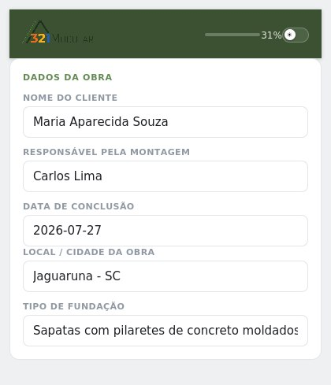
Cabeçalho + card "Dados da obra" preenchido3 Percorrendo as fases e marcando os itens
Abaixo dos dados da obra, o checklist é dividido em 6 fases, na ordem em que a montagem normalmente acontece:
| Fase | Nome | Itens de verificação | Fotos obrigatórias |
|---|---|---|---|
| F1 | Infraestrutura | 6 | 5 |
| F2 | Estrutura do chalé | 4 | 5 |
| F3 | Esquadrias | 5 | 5 |
| F4 | Acabamentos | 8 | 5 |
| F5 | Telhado | 6 | 3 |
| F6 | Ancoragem do chalé nos blocos CRÍTICO | 2 | 4 |
Cada fase tem uma lista de itens de verificação. Para cada item:
- Toque no item para marcá-lo como concluído. Ele fica com um ✓ verde e o texto ganha um risco (indicando que foi conferido e está correto).
- Se o item não puder ser marcado (ainda não foi feito, ou não se aplica a esta obra), deixe-o desmarcado. Uma caixa de justificativa aparece automaticamente logo abaixo, e é obrigatório explicar o motivo ali.
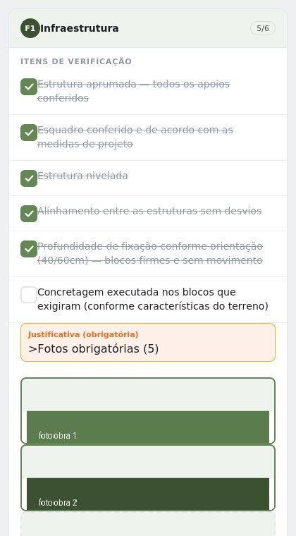
Fase 1 (Infraestrutura): itens marcados em verde e, no último item deixado em aberto, a caixa de justificativa aparece automaticamenteO contador no cabeçalho de cada fase (ex.: 5/6) mostra quantos itens já foram concluídos naquela fase, e fica destacado em verde quando a fase é finalizada por completo.
4 Enviando as fotos obrigatórias
Logo abaixo dos itens de cada fase, há uma grade de fotos obrigatórias, cada uma com uma legenda indicando o que deve ser fotografado (ex.: "Visão geral da infra", "Lateral esquerda — alinhamento").
- Toque no quadro tracejado com o ícone de câmera 📷.
- Escolha a foto da galeria ou tire uma nova foto na hora.
- A miniatura da foto aparece preenchendo o quadro, que passa a ter borda verde sólida — sinal de que aquela foto foi registrada com sucesso.
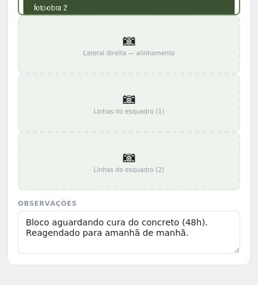
Duas fotos já enviadas (borda verde) e três quadros ainda pendentes (borda tracejada)Repita esse processo para todas as fotos pedidas em cada uma das 6 fases antes de gerar o PDF final.
5 Observações de cada fase
No final de cada fase há um campo de Observações livre, para registrar qualquer detalhe relevante sobre aquela etapa (condições do terreno, adaptações feitas, combinados com o cliente, etc.). Esse texto também é incluído no relatório em PDF.
6 Atenção especial: fase de Ancoragem (F6)
A Fase 6 — Ancoragem do chalé nos blocos é destacada em vermelho porque trata de um ponto crítico de segurança e estabilidade estrutural da obra. Nela:
- Os dois itens de verificação tratam da fixação dos pisos aos blocos de concreto e da conferência de todos os fixadores.
- O campo de observações é obrigatório — descreva condições do terreno, cuidados especiais ou qualquer anomalia percebida durante a ancoragem, mesmo que todos os itens tenham sido marcados como concluídos.
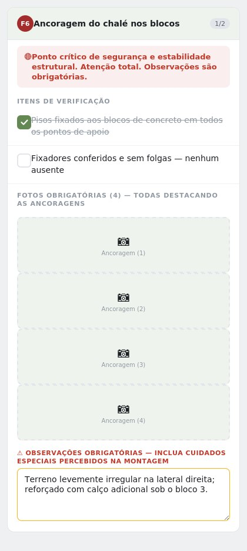
Fase crítica de ancoragem: aviso vermelho, item concluído/pendente e observação obrigatória preenchida7 Progresso, Limpar e Gerar PDF
Uma barra fixa na parte inferior da tela acompanha você durante todo o preenchimento, mostrando:
- ✓ contador de itens concluídos em relação ao total do checklist;
- 📷 contador de fotos já enviadas em relação ao total esperado;
- o botão Limpar, que apaga todo o formulário preenchido (pede confirmação antes, pois a ação não pode ser desfeita);
- o botão ↓ Gerar PDF, que monta automaticamente o relatório final.
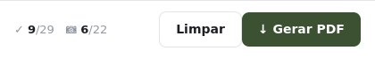
Barra inferior fixa: contadores de progresso e ações finaisAo tocar em Gerar PDF, o aplicativo cria um arquivo com:
- cabeçalho com os dados da obra (cliente, responsável, local, data, fundação);
- cada uma das 6 fases, com todos os itens marcados ou não, e as justificativas de itens pendentes;
- as observações escritas em cada fase;
- um relatório fotográfico com todas as fotos enviadas, já legendadas;
- uma linha final para assinatura do responsável.
O PDF é baixado automaticamente no aparelho, com um nome no formato
321Modular_NomeDoCliente_AAAA-MM-DD.pdf, pronto para ser enviado ou arquivado.
8 Tema claro / escuro
No canto superior direito do cabeçalho há um pequeno botão de alternância (☀️ / 🌙). Toque nele para trocar entre o tema claro e o tema escuro — útil em obras com muita luminosidade ou para economizar bateria à noite. A preferência escolhida fica salva no aparelho e é lembrada da próxima vez que o checklist for aberto.
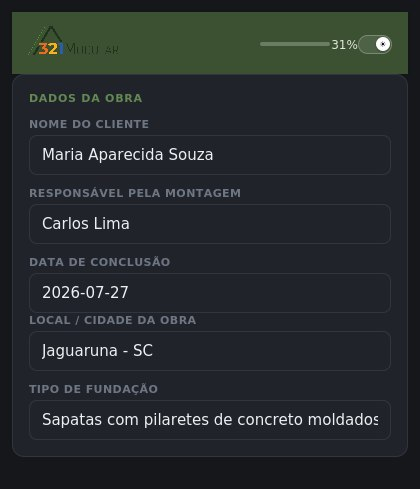
Mesma tela em tema escuro9 Avisos importantes
- Preencha o checklist de uma só vez, sem sair da página no meio do processo;
- Gere o PDF assim que terminar o preenchimento de todas as fases;
- Use o botão Limpar apenas quando tiver certeza — ele não pode ser desfeito.
10 Perguntas frequentes
Preciso preencher as fases na ordem F1 → F6?
O checklist não bloqueia a ordem, mas recomenda-se seguir a sequência das fases, já que ela acompanha a ordem real da montagem (infraestrutura antes da estrutura, estrutura antes dos acabamentos, etc.).
O que acontece se eu deixar um item obrigatório sem marcar e sem justificar?
O item aparecerá no PDF como não concluído, e o campo de justificativa sairá como "(não preenchida)" — por isso é importante sempre preencher o motivo quando um item não puder ser marcado.
Posso gerar o PDF mais de uma vez?
Sim. Enquanto a página não for fechada ou recarregada, você pode continuar editando e gerar o PDF quantas vezes quiser — cada geração cria um novo arquivo com a data e hora atuais.
O checklist funciona sem internet?
A tela e o preenchimento funcionam normalmente offline, mas é recomendável abrir a página ao menos uma vez com internet antes de ir para o local da obra, para garantir que tudo carregue corretamente.